Qué es FREDERATION?
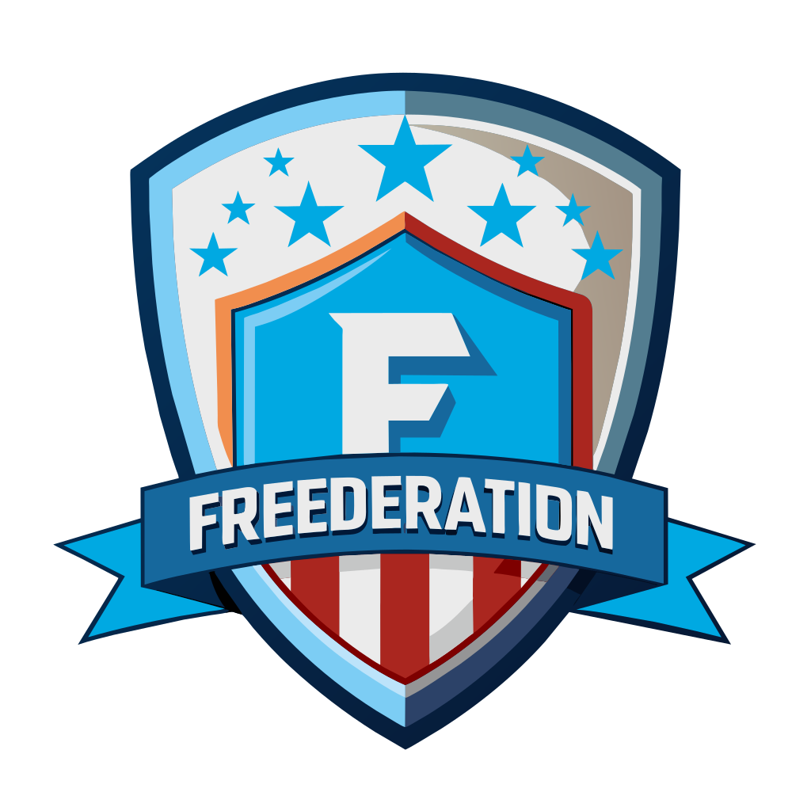
FREEDERATION es una plataforma de comunidades temáticas que apoya financieramente proyectos Open Source, incluyendo software libre y obras de dominio público.
Convierte estos proyectos en Franquicias de Responsabilidad Mutua, donde los agentes asociados participan en la curación de contenido y el respaldo de compromisos en la blockchain.
Características de FREEDERATION:
-
Franquicias de Responsabilidad Mutua: Los proyectos Open Source se transforman en franquicias donde los agentes asociados contribuyen a la curación y mejora del contenido de redes sociales descentralizadas.
-
Respaldo de Compromisos en la Blockchain: Gracias al modelo de negocio de la Franquicia de Responsabilidad Mutua, los agentes asociados pueden brindar pólizas de aseguramiento para cubrir riesgos en el funcionamiento de aplicaciones descentralizadas.
-
Sistema de Reputación: Se establece un Sistema de Reputación para evaluar el desempeño de los agentes de la franquicia. Este sistema utiliza datos verificables en la blockchain para reconocer y recompensar la contribución y la calidad del trabajo.
-
Integridad de la Información: FREEDERATION incorpora mecanismos para garantizar la Integridad de la Información, especialmente en redes sociales descentralizadas como Nostr. Estos mecanismos aseguran la autenticidad y la confiabilidad de las publicaciones, catalogación y menciones de recomendación.
-
Inbound Marketing: Las capacidades avanzadas de búsqueda categórica y curación de contenidos de FREEDERATION facilitan la implementación de estrategias de Inbound Marketing efectivas. Los patrocinadores pueden conectar con su público objetivo a través de los creadores más influyentes en las comunidades temáticas afines a sus campañas. A su vez, los creadores de contenido tienen las herramientas necesarias para cultivar y fidelizar a su audiencia con publicaciones relevantes y de alta calidad.
En síntesis, FREEDERATION brinda un ecosistema de economía colaborativa para garantizar la sostenibilidad de proyectos de Software Libre, que obtiene sus ingresos del negocio del aseguramiento de compromisos, como de las actividades de preservación de la Integridad de la Información en redes sociales descentralizadas como Nostr.
Motivación
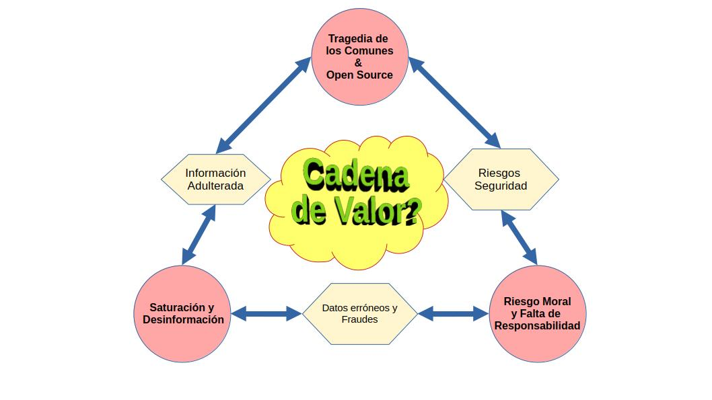
La era digital actual enfrenta numerosos desafíos, entre ellos las amenazas cibernéticas, la desinformación y la falta de integridad en las operaciones digitales.
La falta de mantenimiento del software libre es un factor crucial que agrava estos problemas, exponiendo a usuarios y organizaciones a vulnerabilidades cibernéticas. Esto facilita la propagación de información errónea y fraudes en línea.
Además, las fallas en la información dificultan la toma de decisiones informadas y comprometen la fiabilidad de las aplicaciones blockchain. Esto puede desencadenar adulteraciones en los protocolos DeFi, brechas de seguridad y cuantiosas pérdidas económicas.
Por lo tanto, es fundamental establecer una cadena de responsabilidad clara entre los encargados del mantenimiento de la infraestructura computacional y los beneficiarios de las economías digitales.
Desafíos del Marketing Digital en la Web Descentralizada
FREEDERATION tiene como objetivo combatir los desafíos de integridad de la información que obstaculizan tanto la experiencia del usuario como la viabilidad empresarial en la economía digital.
En el contexto de la Web Descentralizada, la desinformación dificulta el desarrollo de campañas de marketing efectivas y obstaculiza la construcción de relaciones de confianza entre patrocinadores, creadores de contenido y su público objetivo.
Las plataformas de redes sociales existentes monopolizan el acceso a la categorización de contenidos, lo que no solo limita la efectividad en la filtración de información relevante, sino que también coloca la responsabilidad de moderar el contenido en manos de administradores cuyos intereses pueden no siempre alinearse con los de la comunidad.
En contraste, la aparición de redes sociales descentralizadas como Nostr prometen una mayor libertad y transparencia, pero también conlleva desafíos. La falta de integridad y compromiso por parte de los actores económicos en Nostr conduce a la proliferación de fraudes y ataques, socavando la confianza en la infraestructura comunitaria.
Por otro lado, los patrocinadores y creadores de contenido afrontan dificultades en la ardua tarea de destacar sus publicaciones y llegar a su audiencia objetivo. Se ven obligados a operar en un entorno donde no existen mecanismos directos de clasificación de contenido según las afinidades temáticas de las comunidades.
Sostenibilidad de la Infraestructura de la Web Descentralizada
El éxito de una plataforma de comunidades temáticas en la red social Nostr no solo depende de la calidad de sus herramientas de software, sino también de la seguridad y sostenibilidad de la infraestructura subyacente.
Fortalecer la seguridad de la infraestructura computacional y asegurar la sostenibilidad de los esfuerzos en el desarrollo de tecnologías web y blockchain son pasos cruciales para garantizar la efectividad de las estrategias que promueven la integridad de la información en redes sociales descentralizadas.
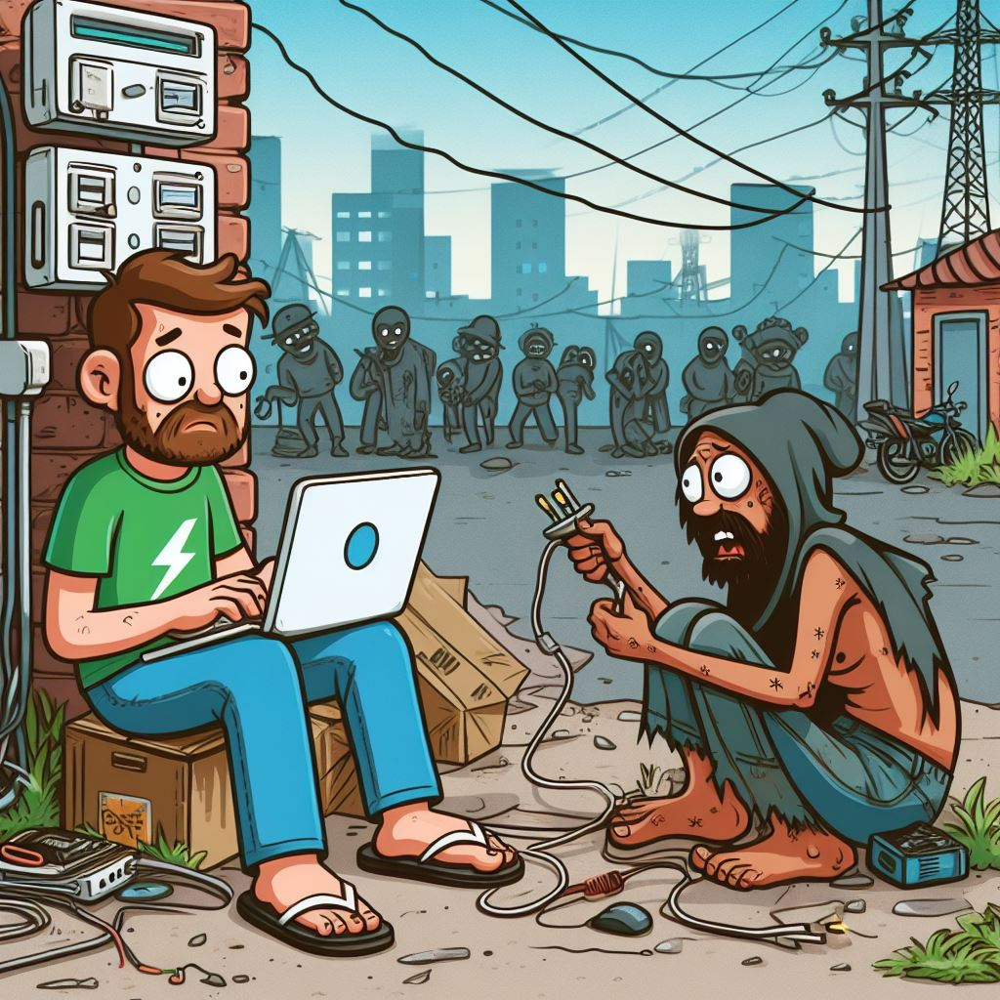
Cabe destacar que estos esfuerzos no pueden realizarse aislados de la realidad económica que rodea al desarrollo de Open Source (software de código abierto), un componente fundamental de la Web Descentralizada. La falta de un modelo económico viable para el Open Source dificulta la asignación de responsabilidades para su desarrollo y mantenimiento, lo que a su vez genera serios problemas de seguridad y confiabilidad en los sistemas informáticos.
Ciberseguridad y Descargo de Responsabilidades del Open Source
El software de código abierto ha sido objeto de preocupación debido a incidentes de seguridad como XZ y Log4J. Estos eventos resaltan la importancia de la seguridad y la sostenibilidad en el desarrollo del software libre. La falta de un modelo económico sólido para el mantenimiento del software libre es un desafío importante.
Auditar proyectos de código abierto en busca de vulnerabilidades es difícil debido a recursos limitados y la naturaleza descentralizada del desarrollo. Esto puede llevar a fallos críticos de seguridad que pasan desapercibidos.
Implicaciones y Respuestas Gubernamentales
Conscientes de los riesgos, gobiernos y agencias están desarrollando pautas de seguridad para establecer una cadena de responsabilidad entre los actores involucrados en el mantenimiento del software libre.
La Casa Blanca está implementando medidas para abordar los riesgos de ciberseguridad, incluyendo acciones para asegurar infraestructuras críticas, promover buenas prácticas de seguridad y colaborar con la comunidad de código abierto.
Por su parte, la Unión Europea ha propuesto el Acta de Resiliencia Cibernética (CRA), que busca mejorar la protección contra ciberataques. Sin embargo, ha generado preocupaciones sobre responsabilidades legales y financieras adicionales para los contribuyentes de código abierto, lo que podría sofocar la innovación.
Compromisos de las Aplicaciones Comerciales con la Ciberseguridad
Las regulaciones que responsabilizan legalmente a los fabricantes de software podrían tener consecuencias imprevistas para el ecosistema del software libre. Podrían desalentar a las empresas a contribuir al código abierto debido al aumento de costos y el riesgo de divulgación de vulnerabilidades.
Esto podría llevar a las compañías a preferir el desarrollo de software propietario, donde ejercen mayor control interno, en lugar de integrar librerías y software de código abierto.
Oportunidades Emergentes en el Aseguramiento de la Calidad
A pesar de estos desafíos, están surgiendo oportunidades en el campo de la ciberseguridad. Empresas especializadas en la auditoría y curación de paquetes de software de código abierto ofrecen servicios para garantizar la seguridad y fiabilidad del software.
Estas empresas ofrecen sus servicios para garantizar la integridad y fiabilidad de las versiones del software para su uso en aplicaciones comerciales, emitiendo certificados de seguridad que cumplen con regulaciones como la CRA.
Las instituciones dedicadas al "Open-source software stewardship" (gestores de software de código abierto), como las fundaciones de Software Libre, podrían involucrarse en este negocio, garantizando la fiabilidad de los paquetes de software libre con certificados de seguridad.
En resumen, mientras se abordan los desafíos de seguridad en el software libre, es importante equilibrar la responsabilidad con la sostenibilidad y la innovación, aprovechando las oportunidades emergentes para mejorar la calidad y seguridad del software de código abierto.
Colaboración y Mercado de Seguros Cibernéticos
La colaboración entre compañías de seguros y empresas especializadas en la integración de componentes de software es fundamental para elaborar estrategias de mitigación de riesgos de ciberseguridad.
El crecimiento del mercado de los seguros cibernéticos, impulsado inicialmente por grandes empresas y ahora por pequeñas y medianas empresas (pymes), refleja una creciente conciencia de la necesidad de protección contra ciberataques.
El aumento de las amenazas de ransomware y las reclamaciones ha llevado a las aseguradoras a aumentar las primas para mitigar el riesgo, sugiriendo que el mercado de seguros cibernéticos continuará expandiéndose.
Tres cuestiones clave emergen en este contexto:
- ¿Cómo establecer prácticas estandarizadas para evaluar la calidad del software?
- ¿Cómo asignar responsabilidades por los riesgos de seguridad en la cadena de suministro de tecnologías basadas en software libre?
- ¿Cómo integrar en la cadena de valor la economía del respaldo de compromisos de ciberseguridad, con la emisión de certificados de calidad del software, la auditoría y el apoyo al desarrollo del software libre?
Las aseguradoras enfrentan el desafío de auditar de manera eficiente el desarrollo del software ejercido por compañías comerciales. Sin embargo, sus clientes (las compañías comerciales) pueden establecer acuerdos de colaboración con las comunidades de software libre para obtener certificados de seguridad y mejorar su perfil de riesgos, proporcionando evidencias digitales a las empresas aseguradoras.
El papel de los gestores de software de código abierto (Stewardship) es crucial en este ecosistema. Su compromiso con la seguridad en la evaluación y mitigación de riesgos puede permitir primas más asequibles y una mejor postura de seguridad en las empresas aseguradas. A través de esta colaboración, se puede construir un entorno más seguro y sostenible para el software de código abierto, beneficiando a todos los actores involucrados.
Incentivos para apoyar el Open Source
La clave para desarrollar una solución integral que conecte el rendimiento de las campañas de marketing digital con el respaldo a la sostenibilidad de la infraestructura de la web descentralizada es comprender quiénes respaldan actualmente el Open Source y cuáles son sus motivaciones.
La fortaleza del Open Source se basa en el intercambio libre de conocimientos, fomentando la colaboración en comunidades de aprendizaje y dando lugar a la innovación abierta. Sin embargo, surge una paradoja al crear un mercado para su comercialización, ya que para garantizar la monetización de las creaciones intelectuales se haría necesario restringir el acceso al contenido para los usuarios.
Por otro lado, el reconocimiento comunitario de las contribuciones a la calidad del software libre y su impacto por los beneficios que brindan a la industria digital, aumentan la reputación de quienes participan en su desarrollo. El capital social derivado del Software Libre brinda visibilidad y favorabilidad a las compañías involucradas, lo cual favorece la promoción de sus marcas.
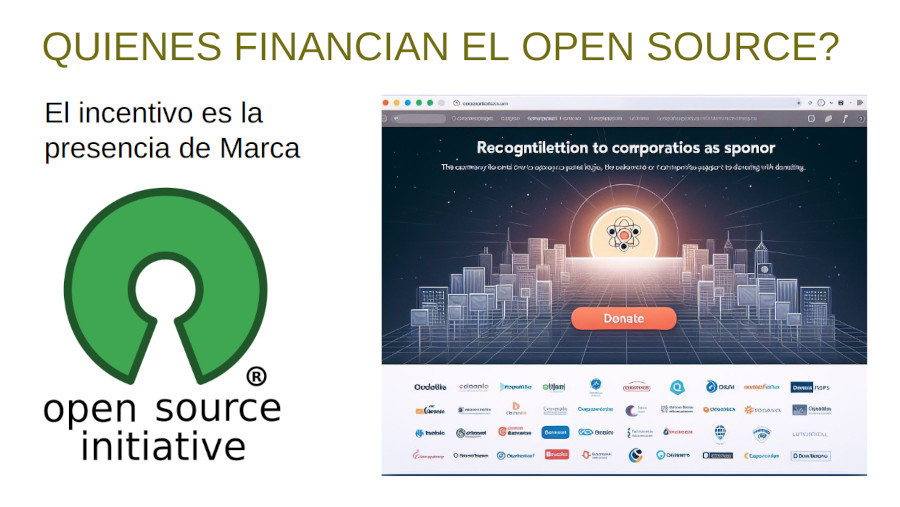
Actualmente, la estrategia más efectiva para motivar a los patrocinadores que financian el Open Source ha sido representar de manera visible sus marcas y logotipos en los sitios web asociados a los proyectos.
Sin embargo, surge la pregunta de si esta mención en un portal web relacionado con Open Source es suficiente para conectar a las compañías con sus clientes, o a los creadores digitales con su audiencia. Se desaprovecha el potencial de las redes sociales y los motores de búsqueda y recomendación integrados en estas plataformas.
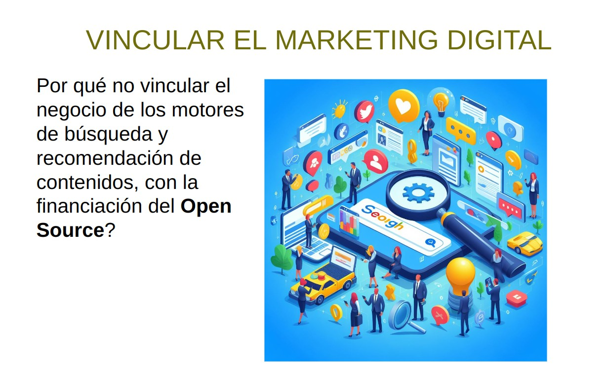
Partiendo de ese planteamiento, FREEDERATION estructura su solución para vincular la actividad económica de la promoción de contenidos en Nostr con el respaldo a los proyectos de Software Libre, destacando la conexión con el capital social asociado a los proyectos que benefician a la sociedad en su conjunto.
Retos en la Moderación de Contenidos
En un mundo digital cada vez más descentralizado, la necesidad de sistemas que fomenten la confianza y la responsabilidad se vuelve primordial. Es en este contexto que surge la propuesta de un Sistema de Reputación para la Web Descentralizada, una iniciativa que busca desarrollar mecanismos de economía digital basados en el Marketing Responsable.
El enfoque propuesto deberá erradicar las prácticas nocivas de las actuales plataformas de marketing digital en la web2, las cuales consisten en fomentar la publicidad intrusiva y vulnerar la privacidad de los usuarios con la recolección de forzosa de datos personales.
Un Sistema de Reputación para Nostr
Nostr es un protocolo de comunicaciones diseñado específicamente para redes sociales descentralizadas. Ofrece una arquitectura orientada a eventos que facilita la interoperabilidad y el procesamiento de mensajes a través de nodos llamados "Relays". Los usuarios interactúan mediante mensajes JSON firmados criptográficamente, lo que garantiza la autenticidad de las comunicaciones.
La elección de Nostr como plataforma para este Sistema de Reputación se fundamenta en su simplicidad y en su enfoque centrado en el usuario. Las características de Nostr son particularmente atractivas para los defensores de la privacidad y la descentralización, ya que permiten a los usuarios ser verdaderos dueños de su información.
No obstante, Nostr enfrenta un problema con la presencia de cuentas maliciosas que desorientan a los usuarios al asignar referencias erróneas de contenido no pertinente, lo que conlleva prácticas fraudulentas, publicidad engañosa y promoción no deseada. Tales prácticas constituyen una forma de spam que afecta negativamente la experiencia de los usuarios y los expone a riesgos informáticos.
El Problema con los Zaps
Actualmente, Nostr cuenta con un mecanismo para gestionar la promoción de contenidos mediante la métrica de la cantidad de donativos que reciben las cuentas populares. Conocidas como Zaps, se denomina a las operaciones relacionadas con la gestión de microdonaciones realizadas a través de la Lighting Network, tal y como se especifica en la Propuesta de Mejora (NIP) 57.

El inconveniente con determinar la relevancia de los contenidos de acuerdo a la cantidad de Zaps que reciben sus autores, es que los agentes maliciosos pueden incrementar artificialmente la reputación de sus cuentas mediante la auto-donación y la creación de esquemas de confabulación entre cuentas falsas. Tales prácticas manipulan los sistemas de clasificación y recomendación, fomentando la proliferación de contenido malicioso en la red.
El Aseguramiento de la Calidad como Sustento de la Reputación
Las comunidades en la red social Nostr necesitan un modelo organizacional que gestione la calidad de la información y genere ingresos para apoyar el desarrollo de Software Libre, crucial para la infraestructura de la web descentralizada.
La clave está en desarrollar mecanismos para que los usuarios identifiquen y valoren la autenticidad y calidad del contenido sin sacrificar su privacidad ni ser víctimas de prácticas intrusivas. Este modelo debe incluir mecanismos de arbitraje para la moderación de contenidos, basados en un sistema de reputación.
Por las razones expuestas, resulta crucial la integración de Proyectos de Open Source como garantes de la reputación. Al establecer organizaciones de responsabilidad colectiva, se logra estructurar un modelo de negocio sostenible alrededor de los servicios de aseguramiento de la calidad y la integridad de la información en redes sociales descentralizadas.
Propuesta de Valor
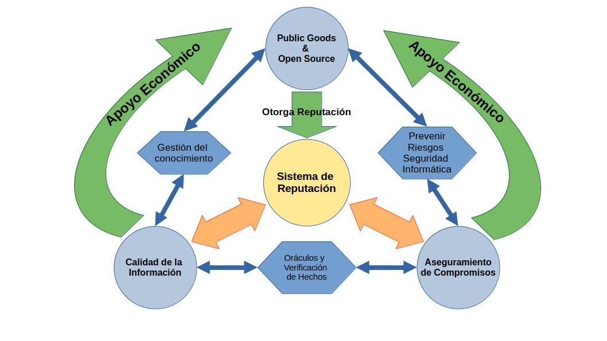
FREEDERATION es una plataforma que permite a proyectos Open Source establecerse como Franquicias de Responsabilidad Mutua. Aprovechando el prestigio de estos proyectos, respaldan los compromisos de sus miembros asociados, conocidos como Agentes Aseguradores.
Inicialmente, los Agentes Aseguradores monetizan su conocimiento mediante la curación de contenidos y categorización, facilitando estrategias de marketing responsable en redes descentralizadas como Nostr.
De este modo, no solo se construye una infraestructura de información de calidad que conecta a patrocinadores con su audiencia objetivo, sino que también se establece una función de recaudación para consolidar un fondo de cobertura de riesgos en ciberseguridad.
A medida que los Agentes Aseguradores desempeñan su labor preservando la calidad de la información en redes sociales descentralizadas, desarrollan una reputación individual que les permitirá, en el futuro, emitir pólizas para cubrir riesgos en ciberseguridad y proteger la integridad de aplicaciones descentralizadas y protocolos DeFi.
Las instituciones de aseguramiento en la blockchain implementarán mecanismos para garantizar la seguridad de los sistemas informáticos que integren componentes Open Source, contribuyendo así al financiamiento del software libre y los bienes públicos digitales.
En resumen, FREEDERATION se presenta como una plataforma esencial para el apoyo económico y la integridad de proyectos Open Source, promoviendo una economía colaborativa y la creación de contenido de alta calidad en un entorno descentralizado y confiable.
Reputación como Valor Intrínseco
FREEDERATION otorga a los proyectos Open Source la facultad de establecerse como instituciones de aseguramiento que garantizan el respaldo de compromisos de sus miembros asociados.
La capacidad de respaldar compromisos se fundamenta en el valor intrínseco de los proyectos Open Source, el cual consiste en el Prestigio que los desarrolladores consolidan al cumplir las expectativas de la comunidad de sus usuarios.
Tal Prestigio aumenta en la medida que cumplan las metas de calidad del software o creación digital. Usando su respaldo institucional, la organización del proyecto Open Source adquiere la facultad de otorgar Reputación a las agencias de aseguramiento asociadas en su esquema.
En ese orden de ideas, FREEDERATION establece un pacto de asociación entre los proyectos Open Source y las agencias aseguradoras bajo el modelo de Franquicia: El proyecto Open Source expande su influencia como marca y bajo su Prestigio respalda los compromisos adquiridos por sus socios miembros de la institución, las Agencias Aseguradoras.
A cambio de su respaldo institucional, los franquiciados (Agencias Aseguradoras) retribuyen parte de sus ingresos a la franquicia aseguradora. Es decir, por cada venta de pólizas de seguros se contribuye una prima base a la organización gestora (la franquicia) y del excedente corresponde al franquiciado una comisión de venta.
Las Agencias Aseguradoras se desempeñan no solo en el respaldo de compromisos entre agentes económicos, sino también en labores de preservación de la información. Tales labores son cruciales para la Moderación de Contenidos y el Marketing Responsable en redes descentralizadas como Nostr.
En síntesis, FREEDERATION permite aprovechar el prestigio de los proyectos Open Source para autorizar a los franquiciados (Agencias Aseguradoras) ejercer los servicios que requieran un respaldo contractual usando su Reputación y membresía de la franquicia como colateral.
Organización de la Franquicia
FREEDERATION establece un modelo de Franquicia de Responsabilidad Mutua para que los proyectos Open Source conformen una red de agentes asociados que venderán servicios en nombre de la organización y así recaudarán los fondos para la gestión del proyecto.
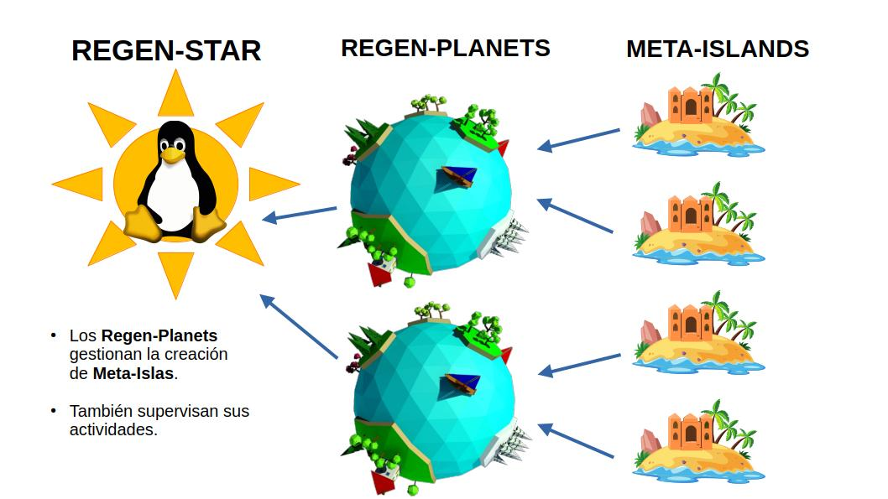
Para ello, se emplea la analogía de un sistema solar, donde el proyecto Open Source se representa como una estrella, la Regen-Star.
A partir de la Regen-Star, se derivan los planetas (Regen-Planets) que ejercen como Agentes de Afiliación: Es decir, cada Regen-Planet constituye un tipo especial de agente asociado en la organización Regen-Star que gestionan la membresía de los nuevos agentes franquiciados.
Por otro lado, los agentes franquiciados adquirirán una Agencia Aseguradora: las Meta-Islas son un tipo de activo no fungible que los autoriza a operar servicios en nombre del proyecto Open Source representado en la Regen-Star.
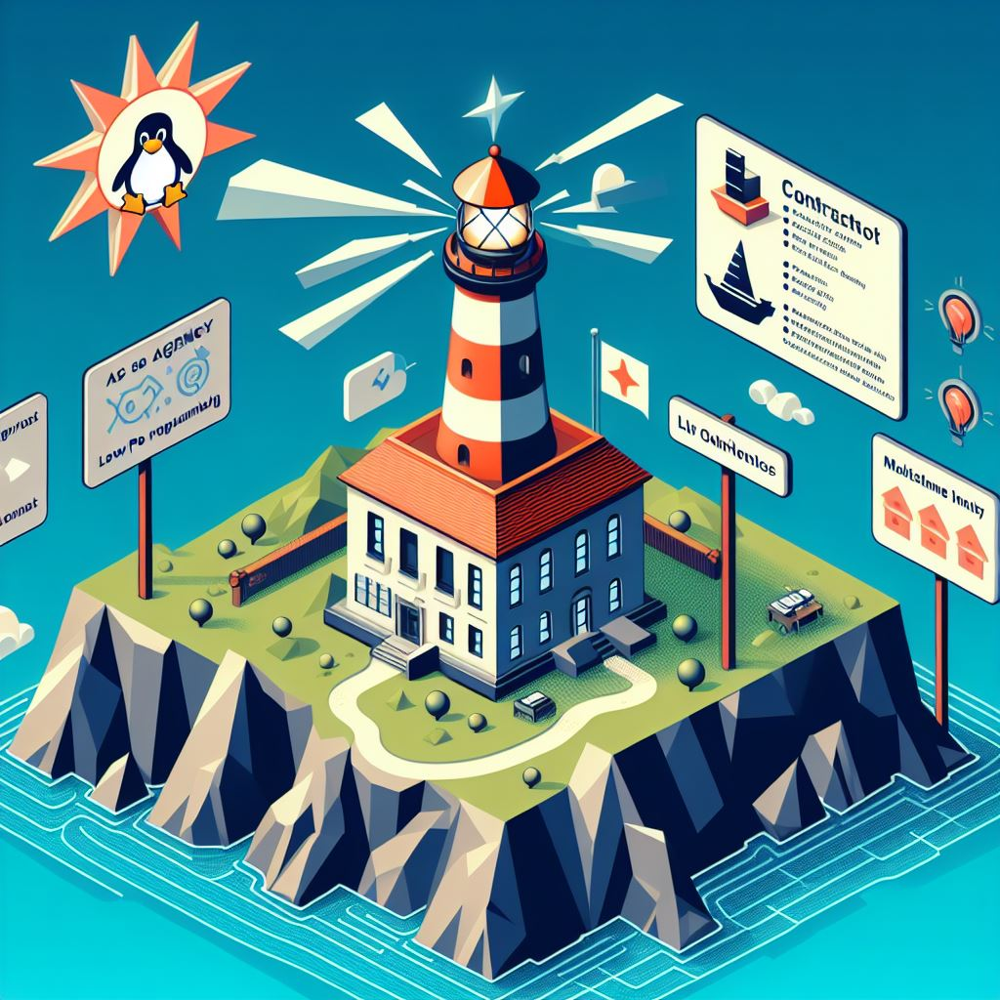
Las Meta-Islas son las agencias aseguradoras en el Metaverso de FREEDERATION. Estas agencias venden pólizas de aseguramiento y servicios de curación de contenidos relevantes.
Su misión es garantizar la Integridad de la Información en sistemas de computación distribuida. De manera análoga, las Meta-Islas catalogan contenidos y filtran información relevante para ayudar al desarrollo de motores de búsqueda y la promoción de canales temáticos.
Curación de Contenido y Marketing Responsable
Las comunidades temáticas en la red social Nostr requieren un modelo organizacional que estructure un negocio dedicado a la catalogación de publicaciones y contenidos Este modelo no solo debe ser capaz de gestionar la calidad de la información, sino que también debe generar ingresos para respaldar el desarrollo de Software Libre, una pieza fundamental en la infraestructura de la web descentralizada.
Como una plataforma DAO de aseguramiento de compromisos, FREEDERATION se enfoca en el desarrollo de herramientas para construir comunidades temáticas. Para ello establece una administración responsable de los índices de clasificación de contenidos y estrategias orgánicas de moderación basadas en criterios comunitarios.
En el corazón de este modelo se encuentra la implementación de mecanismos de arbitraje para la moderación de contenidos, los cuales se apoyan en un Sistema de Reputación como pilar fundamental: Aquí es donde los proyectos de Software Libre juegan un papel crucial, otorgando reputación a los agentes económicos del modelo organizacional a cambio del apoyo económico que proporcionan.
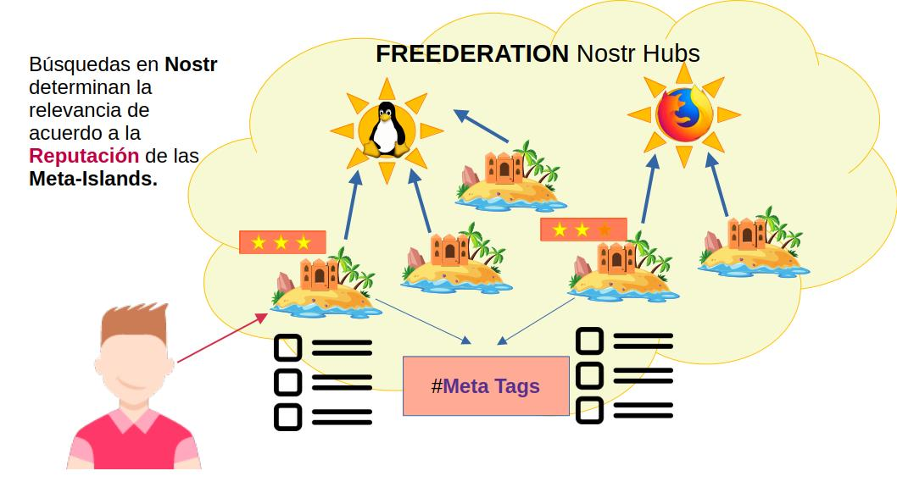
FREEDERATION establecen mecanismos de Marketing Responsable a través de la monetización del servicio de Curación de Contenidos, llevado a cabo por los agentes de la Franquicia de Responsabilidad Mutua. Estos agentes se encargan de categorizar los contenidos, ejerciendo su labor dentro de las Meta-Islas asociadas a una Regen-Star.
De esta manera, FREEDERATION incentiva a los patrocinadores a invertir en las Meta-Islas, terrenos virtuales del metaverso que representan las cuentas influyentes especializadas en las temáticas y categorías sobre las cuales han de enfocar los esfuerzos de Marketing Responsable.
La interacción entre patrocinadores (Sponsors) y las Meta-Islas se describe a continuación:
- Nuevas aplicaciones compatibles con el protocolo Nostr contarán con los servicios de la plataforma de FREEDERATION para encontrar a las cuentas responsables de categorizar el contenido.
- Las Meta-Islas desarrollarán su Reputación al asumir el rol de Curadores de Contenido mediante la administración de una cuenta especial en Nostr.
- A medida que relacionan contenidos, publicaciones y direccionan otras cuentas de Nostr basándose en su relevancia temática, adquieren influencia y prestigio que atraerá el interés de los patrocinadores (Sponsors).
- Los Sponsors elegirán a las Meta-Islas más relevantes de acuerdo a las temáticas de sus campañas, y procederán a establecer un acuerdo económico con las Meta-Islas para promover contenidos a cambio de una comisión. Este mecanismo se conoce como SponsorShot.
- Mediante el proceso de SponsorShot, los anunciantes proponen sus contenidos a ser categorizados pagando una comisión por el servicio, el cual puede ser atendido por la Meta-Isla a discreción, según convenga y sometiéndose a las políticas de la comunidad. Véase el capítulo de SponsorShot para mas información.
Valor Agregado para los Patrocinadores (Sponsors)
A través del proceso de SponsorShot, el patrocinador obtiene las herramientas para destacar sus publicaciones y conectarse con su audiencia. Tales herramientas permiten que los motores de búsqueda relacionen su información de acuerdo con la relevancia temática en la cual clasifica sus contenidos y oferta de valor.
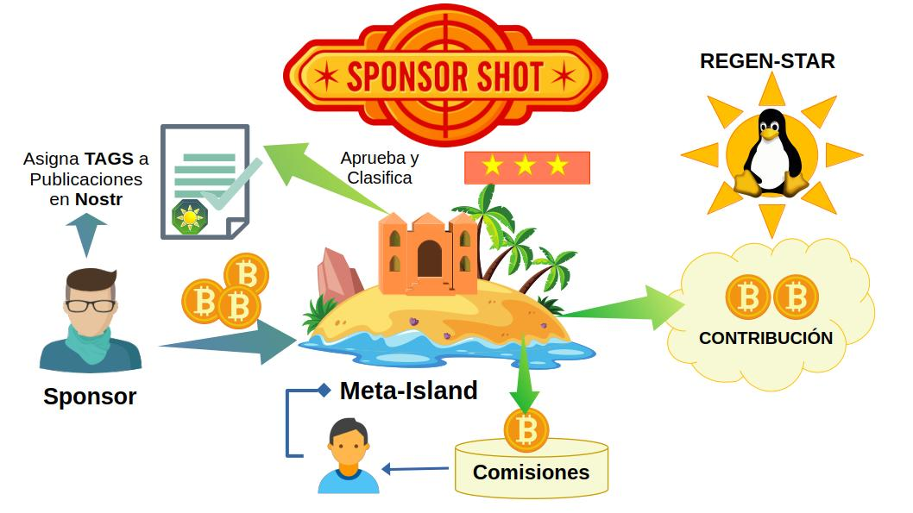
El resultado del proceso consiste en la obtención de unos tokens y el servicio de referenciación ejercido por la Meta-Isla:
- La adquisición de un número finito de Listing-Tokens que el patrocinador (Sponsor) usará para registrarse en la lista de subscriptores VIP en las Meta-Islas de su elección. Los motores de búsqueda usarán esta lista de subscriptores para explorar contenidos asociados a las categorías de la Meta-Isla.
- Un paquete de NFTs generados aleatoriamente, los Combi-Tokens, los cuales corresponden a colecciones licenciadas por la Regen-Star (Sustain-Collections). Estos Combi-Tokens corresponden a recompensas de la comunidad, artículos de juegos o tickets de eventos. También se utilizan para destacar publicaciones y representar insignias en el perfil de Nostr.
- Adicionalmente, a cambio de una Comisión Condicionada, la Meta-Isla hará mención de un artículo o publicación propuesta por el Sponsor para facilitar su búsqueda semántica y mejorar el desempeño del motor de recomendaciones a su público objetivo.
En resumen, el proceso de SponsorShot establece un mecanismo flexible donde el Sponsor y la Meta-Isla gestionan la forma en la que se hará mención de la publicación a referenciar en el feed de mensajes de la cuenta de Nostr asociada a la Meta-Isla. De esa manera se facilitan las búsquedas en la red social Nostr.
Fuentes de Recaudo
La financiación de proyectos Open Source se constituye de tres fuentes:
- De la afiliación de miembros en la Franquicia de Responsabilidad Mutua (Regen-Star). Esta afiliación consiste en la adquisición de una Agencia de Aseguramiento, que se representa en FREEDERATION como Meta-Isla.
- Del servicio de Catalogación y Promoción (Ejercido por las Meta-Islas). Los patrocinadores (Sponsors) participan en una transacción donde tramitan la catalogación de sus contenidos a cambio de un pago a la Meta-Isla. A cambio, el Sponsor obtiene un paquete de Listing-Tokens y de Combi-Tokens generados aleatoriamente durante la operación.
- En futuras versiones del protocolo de FREEDERATION, se otorgará a las Meta-Islas la facultad de respaldar compromisos y vender pólizas de aseguramiento usando el token de la Meta-Isla como colateral.
Para la afiliación, el recaudo ejercido por los Regen-Planets se gestiona mediante el pago de la licencia por afiliación para cada nuevo miembro de la franquicia. Bajo este esquema, los Regen-Planets obtienen una ganancia por comisión que se cobra por afiliación de cada nuevo miembro.
De forma análoga, las Meta-Islas recaudan fondos mediante el proceso de SponsorShot, el cual gestiona el proceso de acuñamiento del paquete de NFTs para el Sponsor (Combi-Tokens y Listing-Tokens). De ésta transacción, la Meta-Isla descuenta una comisión de venta.
Respaldo de Compromisos
La infraestructura de aplicaciones descentralizadas demanda mecanismos que aseguren el respaldo de compromisos entre agentes económicos, en un ambiente donde no existen autoridades ni instituciones legales.
Las Meta-Islas utilizan su reputación y el vínculo con la Regen-Star para respaldar compromisos en su representación.
Como parte del contrato de membresía a la Regen-Star, se establecen reglas de operación y cláusulas que cada operador de las Meta-Islas debe cumplir.
Tales reglas contemplan las medidas de moderación de contenidos, como también operaciones de mantenimiento de infraestructura de cómputo para apoyar la interoperabilidad en la red social Nostr.
Esto puede incluir el mantenimiento de servidores de respaldo de datos conocidos como Relays. También el apoyo de motores de búsqueda y consultas de información. Para ello, FREEDERATION incorpora mecanismos de denuncia y resolución de casos por censo aleatorio:
- Los usuarios dueños de un Combi-Token o Meta-Isla están autorizados para publicar denuncias por el contenido malicioso que viola las normas de la comunidad. También pueden denunciar la negligencia o de las Regen-Star al respecto de la gestión de los proyectos Open Source.
- Los organizadores de los proyectos Open Source postulan su Regen-Star en la Lotería de Arbitraje y Promoción para ser promovidos aumentando su nivel de Prestigio (y con ello aumentan la Reputación de las Meta-Islas asociadas a su organización). Para ello, pagarán una cuota de promoción en la DAO de FREEDERATION.
- Periódicamente, cada semana se concierta un sorteo aleatorio donde los participantes, habilitados por la titularidad de su Meta-Isla, pueden ser elegidos en la Lotería de Arbitraje y Promoción para ser consultados sobre el veredicto de los juicios y denuncias acerca de la gestión de las Regen-Star o las Meta-Islas.
La DAO de FREEDERATION ha de recolectar un tributo para un fondo común que será distribuido en los premios de la Lotería de Arbitraje y Promoción. Así se incentiva la participación de los operadores de las Meta-Islas en la resolución de casos.
La consecuencia de una sanción o penalización resultante del veredicto en la Lotería de Promoción consiste en la pérdida del colateral para la entidad sancionada:
- Para la Meta-Isla sancionada, corresponde a la pérdida de la titularidad de tal activo.
- Del mismo modo, los operadores del Regen-Planet pueden ser sancionados con la pérdida de la titularidad del activo (el mismo Regen-Planet).
- Para la organización de la Regen-Star, se aplica una sanción en la rebaja de su grado de Prestigio, se descuenta la indemnización e incluso se bloquea su actividad económica.
Para más información sobre la gobernanza y la resolución de juicios, se recomienda revisar la sección Lotería de Arbitraje y Promoción.
NFTs con Utilidad
FREEDERATION brinda herramientas para que las Regen-Stars licencien colecciones de NFTs, estableciendo parámetros para su acuñamiento y emisión aleatoria, lo que brinda a los coleccionistas una experiencia única y emocionante.
Los pioneros en esta nueva frontera de la propiedad digital serán los patrocinadores (Sponsors), quienes utilizan el proceso de SponsorShot para acuñar los NFTs exclusivos. Con esta funcionalidad se fomenta la participación de la comunidad de usuarios en la red social Nostr para contribuir al proyecto Open Source.
Las colecciones licenciadas en FREEDERATION se conocen como Sustain-Collections, y sus NFTs como Combi-Tokens. Estos activos digitales no solo son objetos de colección, sino que también tienen una utilidad práctica dentro de la red social Nostr, donde los portadores pueden destacar sus interacciones y publicaciones.
Cada NFT de una Sustain-Collection puede proporcionar a su portador derechos a servicios específicos ofrecidos por la comunidad, acceso a eventos promocionales y perks diseñados para incentivar la colaboración con el proyecto Open Source de Regen-Star. Esta estructura no solo fortalece la comunidad, sino que también asegura que cada miembro pueda beneficiarse directamente de su participación activa.
Una característica innovadora de FREEDERATION es la capacidad de crear CombiSets, agrupaciones de Combi-Tokens que pueden combinarse para producir NFTs exclusivos. Al completar los CombiSets, los coleccionistas pueden acceder a premios especiales dentro de la comunidad de la Regen-Star, lo que aumenta su atractivo y valor.
Además de su uso en redes sociales y comunidades, los Combi-Tokens también pueden ser utilizados en juegos NFTs incubados por las Regen-Stars. Estos tokens no solo otorgan habilidades y ventajas a los jugadores, sino que también pueden combinarse en CombiSets para crear NFTs exclusivos con poderes especiales. Esta integración de los NFTs en el mundo de los juegos amplía aún más las posibilidades de participación y diversión para los usuarios.
La distribución aleatoria de piezas entre los coleccionistas, junto con la posibilidad de establecer acuerdos de asociación para la gestión compartida de premios, crea un entorno dinámico y colaborativo en el que los usuarios pueden comerciar, intercambiar y utilizar sus tokens de formas innovadoras y valiosas.
En resumen, FREEDERATION representa un paso audaz hacia la creación de economías digitales sostenibles dentro del metaverso. Al fomentar la participación comunitaria y la colaboración entre los usuarios, esta plataforma está transformando la forma en que interactuamos con los activos digitales, abriendo nuevas fronteras de valor y creatividad en el mundo de los NFTs.
Desarrollos a Futuro
FREEDERATION se presenta como una innovadora plataforma de Franquicias de Responsabilidad Mutua, diseñada para respaldar compromisos en la blockchain. Inicialmente, se enfoca en el negocio de la curación de contenido y el posicionamiento de sitios y publicaciones en Nostr, una red social descentralizada.
Primeros Pasos: Conectando Patrocinadores con Clientes
La primera iteración de FREEDERATION se centra en los patrocinadores (Sponsors) que buscan conectarse con clientes potenciales relacionados con su categoría de negocios. Se ofrecen herramientas y servicios para mejorar la visibilidad y el alcance de publicaciones, ayudando a los patrocinadores (Sponsors) a conectar con audiencias específicas.
Las Meta-Islas se consolidan como entornos virtuales dentro de FREEDERATION que facilitan la organización y gestión del tráfico web. Estas organizan categorizaciones temáticas que permiten a los Sponsors canalizar sus esfuerzos de marketing hacia audiencias específicas, basándose en la relevancia y los intereses compartidos de las comunidades.
El Futuro de FREEDERATION: Asegurando la Integridad de la Información
FREEDERATION irá más allá de la curación de contenido, aprovechando la dinámica de moderación y preservación de la calidad de la información ejercida por las Meta-Islas.
Con el respaldo de la comunidad Open Source representada en las Regen-Stars, FREEDERATION brindará el ecosistema para el desarrollo de futuras aplicaciones en el aseguramiento de la integridad y seguridad de los Oráculos de Información, vitales para las aplicaciones DeFI (Finanzas Descentralizadas).
Desafíos y Soluciones
Uno de los principales desafíos que enfrenta FREEDERATION es la evaluación de la calidad de los proyectos Open Source y su impacto en las comunidades.
Para abordarlo, la gobernanza de las Meta-Islas necesita establecer mecanismos de deliberación por voto anónimo para evaluar y calificar la gestión de los proyectos Open Source desarrollados en las Regen-Star.
Los futuros mecanismos de deliberación deberán prevenir la corrupción y la coordinación de votos mediante sobornos, garantizando la transparencia y la equidad en el proceso de deliberación.
Hacia una Verificación de Hechos en Línea y Aseguramiento de Riesgos
Al lograr un mecanismo de voto anónimo transparente, FREEDERATION tendrá los fundamentos para implementar una plataforma de verificación de hechos en línea que apoye la integridad de la información en los Oráculos.
Estos Oráculos son esenciales para las futuras aplicaciones en el Aseguramiento de Riesgos, donde se necesitan evaluar parámetros contractuales y hechos verificables para activar las pólizas en un contrato de aseguramiento.
Futuras Aplicaciones y Desarrollo
1. Aseguramiento de Riesgos
FREEDERATION planea desarrollar mecanismos para el aseguramiento de riesgos, evaluando parámetros contractuales y hechos verificables para activar pólizas en contratos de aseguramiento. Este desarrollo es crucial para las aplicaciones DeFi, donde la precisión y la confiabilidad de la información son esenciales.
2. Inclusión Financiera
En el futuro, FREEDERATION utilizará las Meta-Islas como colateral para respaldar compromisos financieros en plataformas de préstamos descentralizados P2P. Esta iniciativa fomentará la inclusión financiera, permitiendo a más personas acceder a servicios financieros seguros y confiables.
3. Seguridad de Infraestructura Computacional
Además, FREEDERATION implementará pólizas de cumplimiento para proveedores de cómputo, protegiendo la infraestructura computacional de las aplicaciones descentralizadas. Este enfoque ayudará a prevenir brechas de seguridad y exploits que afectan a la industria DeFi, asegurando un entorno más seguro y robusto para todas las partes involucradas.
Hoja de Ruta (ROADMAP)
El plan de desarrollo de FREEDERATION contempla partir de la estructura del modelo de Franquicias de Aseguramiento representas con las Regen-Star y sus Meta-Islas asociadas, hacia protocolos de aseguramientos de compromisos en la blockchain.
- En la primera iteración, se consolida la plataforma para la curación de contenidos y el recaudo de fondos para apoyar a los proyectos Open Source.
- En la siguiente fase, se desarrollará el mecanismo de Voto Anónimo para la verificación de hechos con respecto a la gestión de calidad ejercido por las Meta-Islas y los administradores del proyecto Open Source en las Regen-Star.
- Se construirán aplicaciones para el respaldo de compromisos financieros y préstamos usando las Meta-Islas como colateral para respaldar los contratos.
- En futuras fases, se construirá una plataforma de Cómputo Verificable (con criptografía ZK) para el procesamiento de información de los eventos de Nostr y el contenido digital realizado por los usuarios. Lo que permitirá desarrollar la infraestructura de los Oráculos de Información basados en Verificación de Hechos.
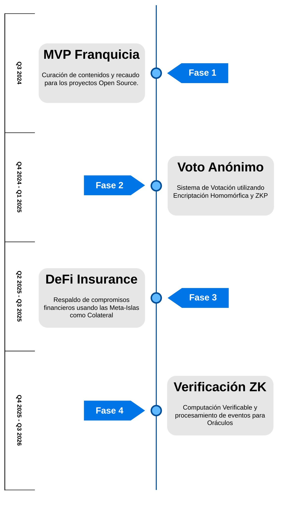
Arquitectura
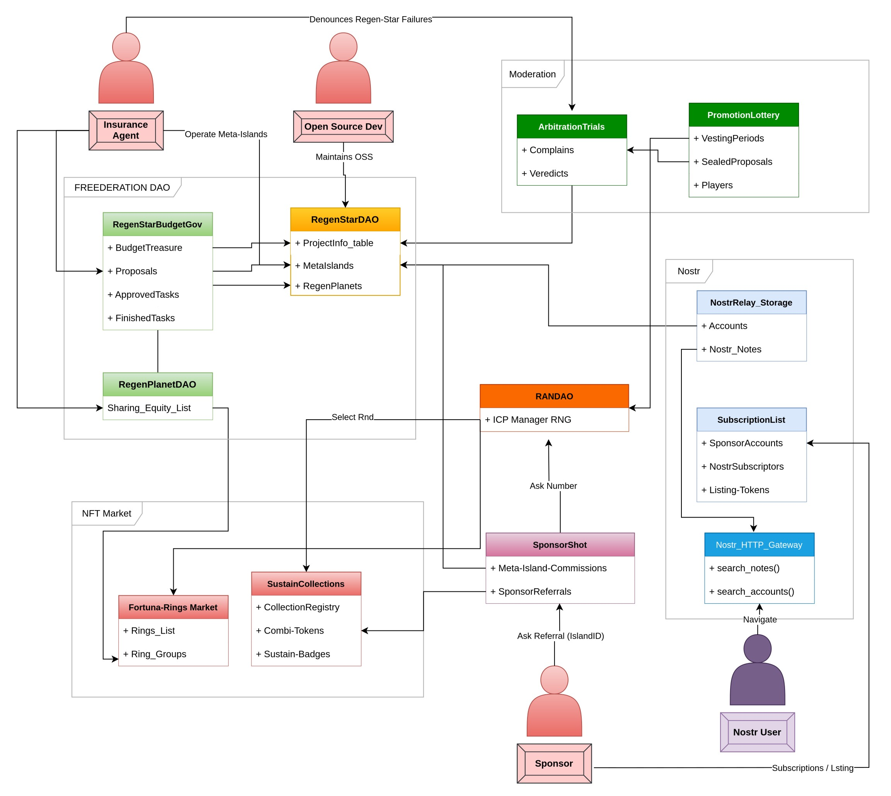
FREEDERATION se compone de 9 subsistemas:
-
Regen-Star DAO: Constituye el repositorio de Franquicias de Responsabilidad Mutua, las organizaciones jerárquicas centradas en las Regen-Star que subscriben a los Regen-Planets, y éstos a su vez contienen las Meta-Islas. Las franquicias de las Regen-Star poseen una gobernanza de participación en 2 niveles donde los Regen-Planets ejercen como agentes de afiliación y supervisión de los agentes asociados de las Meta-Islas.
-
Regen-Star Budget Governance: Gestiona la participción de gobernanza y la asignación presupuestal de financiación de tareas dentro de las Regen-Star. Cada miembro de la gobernanza, las Meta-Islas, tienen poder de voto o veto sobre las propuestas de desarrollo y asignación de recursos. Este subsistema también maneja el seguimiento de las tareas de desarrollo a financiar, así como la asignación del presupuesto priorizado y los mecanismos de aprobación de tarea cumplida.
-
SponsorShot: Gestiona la interacción entre Sponsors y las Meta-Islas, procesando el pago por catalogación y posicionamiento de contenidos del patrocinador (Sponsor). Mediante éste proceso, el Sponsor obtiene un paquete de Listing-Tokens, como también de NFTs promocionales otorgados a discreción del proyecto de la Regen-Star correspondiente.
-
Tribunales de Arbitraje: Gestiona los casos de disputas contra la gestión de las Regen-Planets. Se compone de un mecanismo de denuncias que relaciona publicaciones de Nostr detallando el pliego de cargos y el hilo de discusión, con el registro de los casos interpuestos, registrado como un formulario con detalles sobre el tipo de falta y la entidad acusada.
-
Lotería de Promoción: Un sistema de votación y un sorteo aleatorio en el que participan los operadores de las Meta-Islas. Para participar, los operadores deben enviar sus propuestas selladas a un Banco de Veredictos. Cada VestingPeriod, la DAO de FREEDERATION genera un número aleatorio on-chain, no predecible pero verificable, que se utiliza para seleccionar al azar una propuesta sellada del Banco de Veredictos.
-
Sustain-Collections : Gestiona las colecciones de tokens combinables Combi-Tokens, registrados y licenciados en cada proyecto Regen-Star como Sustain-Collections. Cada Sustain-Collection define los parámetros de generación aleatoria como el subgrupo de Combi-Token y el número de series para conformar CombiSets. Establece también el tipo de token Sustain-Badge, que se obtiene al conformar CombiSets.
-
Fortuna-Rings Market: Los Fortuna-Rings son un tipo especial de Combi-Tokens, relacionados con una Regen-Star correspondiente. El mercado de Fortuna-Rings permite a los coleccionistas conformar grupos CombiSet de 5 anillos para obtener un PlanetMintingToken, que les permitirá acular un Regen-Planet.
-
Regen-Planets DAO: La conformación de un Regen-Planet establece la participación de equity según acuerden los dueños de los anillos que participan en la conformación de un CombiSet. Este sistema de Equity establece el reparto de regalías por el recaudo de comisiones de las actividades de un Regen-Planet. De manera análoga, el contrato que controla la gestión de los Regen-Planets gestiona meta-datos de su registro, y los parámetros de emisión de Meta-Islas con su curva de precios.
-
FREEDERATION Nostr-Relay Storage: Un Canister dedicado a soportar la funcionalidad básica de servicios en Nostr, con respecto al respaldo de información de las cuentas y publicaciones en formato JSON. Gestiona el respaldo de publicaciones Nostr en un contrato inteligente para su almacenamiento descentralizado. Tiene la funcionalidad de una base de datos de almacenamiento que se puede consultar por identificadores de cuenta y de publicaciones, así como entregar listados de publicaciones asociadas a etiquetas. También gestiona el registro de utilización de Listing-Tokens en beneficio de un Sponsor con respecto a las subscripciones de miembros VIP a las cuentas de las Meta-Islas, favoreciendo su visibilidad en los motores de búsqueda.
Franquicia de Responsabilidad Mutua
Con base en la descripción general del concepto de Franquicia de Responsabilidad Mutua para proyectos Open Source (detallada en el capítulo de Propuesta de Valor) , este capítulo profundizará en la interdependencia de funciones y responsabilidades entre los Agentes de Aseguramiento y los Administradores del Proyecto Open Source. Estas dos figuras operan bajo la estructura de la Franquicia de Responsabilidad Mutua, representada por una Regen-Star.

- Regen-Star : Organización que Respalda Esfuerzos Colectivos.
- Meta-Island: Estandarte de la Relevancia del Contenido..
- Regen-Planets: Agentes de Afiliación..
Regen-Star : Organización que Respalda Esfuerzos Colectivos
En FREEDERATION, los proyectos dedicados al mantenimiento del Software Libre se convierten en Regen-Stars, que operan como Franquicias de Responsabilidad Mutua.
Cada Regen-Star establece un pacto de membresía con las Meta-Islas y Regen-Planets a su cargo:
- Para las Meta-Islas afiliadas, la organización de la Regen-Star respalda sus compromisos en la preservación de la Calidad de la Información en redes sociales descentralizadas, como Nostr. A cambio, las Meta-Islands contribuyen a la sostenibilidad del proyecto de Software Libre, recaudan fondos de los patrocinadores que invierten en la promoción de sus contenidos.
- De manera similar, los Regen-Planets gestionan la afiliación de las Meta-Islas que operarán en representación de la Regen-Star, asumiendo la responsabilidad por su futuro desempeño en el respaldo de compromisos y moderación de contenidos. A cambio de su gestión, obtienen comisiones de ventas por afiliación.

Esta relación de beneficio mutuo implica un pacto de responsabilidad, en el que la organización liderada por la Regen-Star debe velar por el comportamiento íntegro de las Meta-Islas bajo su tutela. Asimismo, los operadores de las Meta-Islas tienen poder de voto dentro de la organización.
Fundación de la Regen-Star
Las Regen-Star son creadas con base en la representación de un proyecto Open Source existente, o en su defecto un proyecto de desarrollo de contenidos digitales de dominio público.
Para crear una Regen-Star desde cero, el fundador necesita acuñar un Nucleus-Token desde la DAO de FREEDERATION. Gastando un token de Nucleus-Token, el fundador registra su Regen-Star aportando detalles básicos sobre su proyecto Open Source y perfíl de Nostr.
| Atributo | Descripción |
|---|---|
| name | Identificador del proyecto |
| projectURL | URL del repositorio github o sitio web |
| NostrAccount | Dirección de 32 bytes del perfil de Nostr |
| TargetAddress | Dirección de crypto-billetera para autorizar el control del proyecto. |
Luego de inscribir el proyecto Open Source como una Regen-Star, el fundador puede iniciar una venta inicial de tokens del proyecto brindará a los Early Adopters adquirir un Regen-Planet del proyecto y beneficiarse a futuro de la venta de Meta-Islas. Véase el capítulo de los Regen-Planets para mas detalles sobre la venta inicial a los Early Adopters.
Sin embargo, en su fase inicial la Regen-Star buscará su Acreditación para activar su función de recaudo y expansión de la franquicia. El Prestigio no se desarrolla aún y se mantiene la organización en un estado latente (NEBULOUS) para ser promovida y aprobada por la DAO de FREEDERATION.
Administración de Fondos
La Regen-Star mantiene un fondo común del cuál destinan un porcentaje a financiar tareas de desarrollo y mantenimiento del repositorio del software de código abierto.
Otro porcentaje se destina a la conformación de un Fondo de Cobertura de Riesgos para sustentar demandas en los tribunales: en caso de que se verifique su negligencia en el cumplimiento de sus obligaciones relacionadas con la preservación de la calidad e integridad de la organización.
En un futuro el Fondo de Cobertura de Riesgos también se utilizará para respaldar pólizas de aseguramiento en servicios de ciberseguridad.
Prestigio de la Regen-Star
FREEDERATION cuenta con mecanismos participativos para evaluar el desempeño e integridad de las organizaciones representadas por sus Regen-Stars. Por lo tanto, los miembros dentro de estas organizaciones deben velar por la reputación colectiva del proyecto.
Dicha reputación colectiva de la Regen-Star se denomina Prestigio. Y éste puntaje se actualiza periódicamente (el tiempo establecido por el parámetro VestingPeriod ) cuando la organización a cargo de la Regen-Star tramita su promoción en la DAO de FREEDERATION a cambio de un pago establecido (Cuota de Promoción).
Por otro lado, el puntaje de Prestigio puede ser afectado negativamente por las sanciones que se apliquen sobre la Regen-Star en caso de ser acusadas en el Tribunal de Arbitraje.
El puntaje de Prestigio se usa como factor para el cálculo de la Reputación individual de cada Meta-Isla, lo que favorece su valor de mercado para los patrocinadores (Sponsors).
Las Regen-Star manifiestan una evolución desde su creación y durante su desempeño en la labor de mantener una comunidad y financiar el desarrollo de los proyectos de Software Libre. Si su gestión es satisfactoria y diligente, su Prestigio aumentará con el pasar del tiempo.
Es decir, que el Prestigio de una Regen-Star está directamente relacionado con su antigüedad y constancia en su labor de mantenimiento.
Por otro lado, una Regen-Star puede reducir su Prestigio cuando se determina su responsabilidad en las faltas cometidas por alguna de sus Meta-Islas a cargo, o bien por negligencia en el desarrollo y mantenimiento del proyecto Open Source bajo su gestión.
Ciclo de vida de la Regen-Star
En el momento de su creación por parte del fundador, la Regen-Star se mantiene en un estado latente pero inactivo, denominado NEBULOUS. En este estado, el fundador procede a realizar una venta inicial de Regen-Planets a los Early-Adopters para recaudar fondos y acreditar el proyecto en la gobernanza de la DAO de FREEDERATION.
Su ciclo de vida muestra las diferentes etapas por las que pasa una Regen-Star, desde su creación hasta su posible redención después de cometer una falta:
-
NEBULOUS: La Regen-Star es creada y permanece en este estado inicial. Desde aquí, puede ofrecer una Oferta Inicial de Tokens de Regen-Planets para obtener fondos y tramitar su promoción. Durante ésta fase, no se producen Meta-Islas.
-
PROMOTING: Cuando la Regen-Star obtiene suficientes fondos para pagar la Cuota de Acreditación, pasa al estado de PROMOTING. En este estado, busca la aprobación mediante votación en la Lotería de Promoción celebrada cada VestingPeriod. Si resulta la opción elegida del ganador, pasa a convertirse en ACCREDITED.
-
ACCREDITED: Si la Regen-Star recibe suficientes votos para su aprobación en la Lotería de Promoción, se convierte en ACCREDITED y puede desarrollar sus actividades económicas. Es también la fase en la cuál una Regen-Star puede producir Meta-Islas. Durante este estado, aumenta su Prestigio.
-
GUILTY: Si la Regen-Star es acusada de cometer una falta y romper sus compromisos, es sancionada y pasa al estado GUILTY. Durante éste estado se bloquean las comisiones y no se pueden crear nuevas Meta-Islas o Regen-Planets.
-
REDEEMED: Una Regen-Star que entra en estado GUILTY puede ser redimida y perdonada por el comité de votación, pagando una Tarifa de Absolución. Si el comité de votación vota a favor de su absolución en el Tribunal de Arbitraje, la Regen-Star se convierte en REDEEMED. En este estado puede crear Meta-Islas y recaudar fondos.
Desde un punto de vista funcional, la Regen-Star tiene 2 etapas principales en su desarrollo.
- Se dice que está en etapa de Incubación, cuando es creada y busca su acreditación para expandir y desempeñar labores de aseguramiento de compromisos. Durante su etapa de Incubación, la Regen-Star no puede producir Meta-Islas ni tampoco recaudar fondos de los sponsors. Tampoco puede desarrollar Prestigio ni ser juzgada en los Tribunales de Arbitraje.
- Una vez es aprobada por la gobernanza como un proyecto legítimo, la Regen-Star adquiere la facultad de estar Acreditada y empieza su desarrollo progresivo adquiriendo Prestigio en sus actividades comerciales. Durante ésta fase puede crear membresías a través de las Meta-Islas y expandir la franquicia.
Acreditación de las Regen-Star
La DAO de FREEDERATION establece un mecanismo de sorteo participativo, en el cuál se selecciona al azar a los jurados que votarán positivamente para favorecer a las Regen-Star en estado PROMOTING que se han postulado. Este mecanismo se conoce como Lotería de Promoción.
Análogamente, una Regen-Star existente que ya esté Acreditada (ACCREDITED) puede promover directamente a otra Regen-Star en fase de incubación (NEBULOUS o PROMOTING), pero al hacerlo comparte la responsabilidad sobre su futuro desempeño afectando su Prestigio derivado.
Desarrollo de Prestigio
Una vez una Regen-Star ha sido promovida y acreditada, puede desarrollar su Prestigio a medida que su organización desempeña correctamente las siguientes funciones:
-
Administrar los fondos recaudados para financiar las tareas correspondientes al mantenimiento y desarrollo del Software Libre. O bien para apoyar labores en beneficio de su comunidad.
-
Velar por el buen comportamiento de sus Meta-Islas asociadas, en el ejercicio de la moderación cuando éstas promuevan información engañosa, fraude o contenido malicioso.
La DAO de FREEDERATION establece un procedimiento por el cuál una Regen-Star tramita el incremento de su Prestigio, pagando una Cuota de Promoción que contribuye al Fondo de Gobernanza después de un periodo determinado, el denominado VestingPeriod.
El parámetro de la Cuota de Promoción es fijado en la gobernanza de FREEDERATION como la mínima contribución que una Regen-Star debe aportar del impuesto sobre las actividades comerciales dentro de la Regen-Star. El recaudo de impuestos se destina al Fondo de Gobernanza.
Cada VestingPeriod, la **Regen-Star **que tramita su promoción aumenta su Prestigio según la siguiente fórmula:
Donde SponsorshipBonus es una variable de estado que puede valer [0, 1, 2], y está relacionada con el patrocinio entre Regen-Stars.
Madurez y Patrocinio entre Regen-Stars
Se considera que una Regen-Star ha alcanzado su Estado de Madurez cuando su Prestigio supera el umbral denominado MaturityThreshold. Por defecto, éste umbral corresponde a 8 VestingPeriods.
Al superar este umbral, la Regen-Star adquiere la capacidad de promover directamente a otras Regen-Star en estado de Incubación (NEBULOUS. PROMOTING):
- El incentivo para promover Regen-Stars en incubación es obtener un punto (1) en la variable SponsorshipBonus, lo que permite incrementar su Prestigio más rápidamente.
- Sin embargo, el costo de promover otros proyectos es compartir la responsabilidad en caso de sanciones en los Tribunales de Arbitraje.
- La Regen-Star en Estado de Madurez que promueva otras Regen-Star debe cubrir parte de las indemnizaciones cuando algunas de las Regen-Star bajo su tutela no puedan afrontar sus sanciones con su propio Fondo de Cobertura de Riesgos. En tales casos, se resta 1 punto de Prestigio tanto a la patrocinadora como a la sancionada bajo su tutela, y se pierde el privilegio de SponsorshipBonus para siempre asignándose el valor a 0.
- Una vez que las Regen-Stars patrocinadas alcanzan su umbral de Madurez, se emancipan de su Regen-Star patrocinadora y ya no comparten la responsabilidad en los Tribunales de Arbitraje. Esto aumenta el puntaje SponsorshipBonus de la Regen-Star patrocinadora a 2.
Tribunales y afectación del Prestigio
Los otros mecanismos que afectan el puntaje de Prestigio para la Regen-Star se basan en un sistema de votación y sorteo aleatorio orquestado por la DAO de FREEDERATION, concertado periódicamente por la gobernanza del sistema donde participan las Meta-Islas de todos los proyectos. Estos mecanismos son:
-
Lotería de Promoción: El sorteo aleatorio elige a una Meta-Isla ganadora que determinará cuál Regen-Star en fase de incubación (PROMOTING) merece ser Acreditada para desarrollar su actividad económica y así desarrollar su Prestigio.
-
Tribunal de Arbitraje: La Meta-Isla ganadora de la Lotería de Promoción elige un caso del banco de acusaciones abiertas contra los proyectos. A partir del caso seleccionado determina su veredicto sobre si aplicar o absolver a la entidad acusada.
Ya sea por negligencia al no ejercer la supervisión y moderación sobre las actividades de las Meta-Islas, o errores en la gestión del proyecto de Bienes Públicos, una Regen-Star podría afrontar penalizaciones como la reducción de su puntaje de Prestigio, sanciones económicas y también restricciones en su ejercicio de recaudo.
Meta-Island: Estandarte de la Relevancia del Contenido.
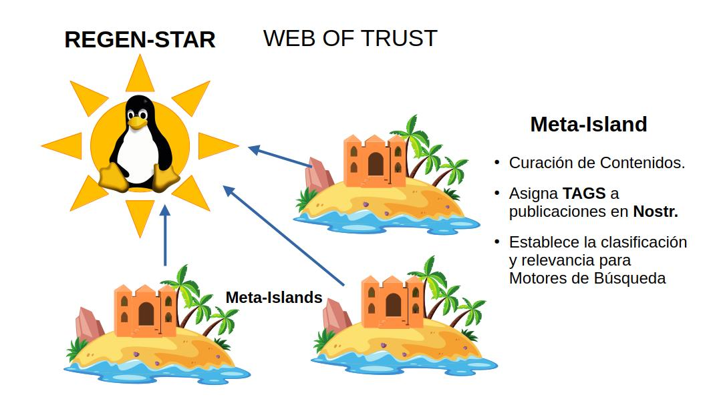
Las Meta-Islas ejercen la labor de Curación de Contenido, se encargan de agregar y catalogar información de calidad apoyados en la garantía que les otorga el Prestigio de la Regen-Star.
En redes sociales descentralizadas como Nostr, los canales de publicaciones asociados a las cuentas de usuarios adquieren relevancia en los motores de búsqueda. Estos direccionan mecanismos de indexación a medida que las publicaciones referencian contenido con descripciones coherentes y catalogan adecuadamente mediante Etiquetas y Menciones.
Un problema existente en Nostr es que se permite a las cuentas maliciosas confundir a los internautas. Debido a la apertura del protocolo descentralizado de Nostr, nada impide la asignación de referencias erróneas a contenido que no corresponde a las temáticas en cuestión. Se induce a fraudes, publicidad engañosa y promoción no deseada. Tal práctica abusiva constituye una forma de Spam que arruina la experiencia de los usuarios y los expone a peligros informáticos.
Como solución, FREEDERATION otorga a las Meta-Islas el rol de Cuentas Importantes que direccionan la información relevante y de calidad para facilitar las búsquedas. Así se facilita el descubrimiento de contenido en el protocolo Nostr.
En contraprestación, las Meta-Islas están supervisadas por la comunidad en la cuál están vinculadas velando por preservar la reputación colectiva del proyecto. Están sujetas al escrutinio de los Tribunales de Arbitraje orquestados por la DAO de FREEDERATION.
Catalogación y Curación de Contenidos
El compromiso con la calidad y la integridad de información, convierte a las Meta-Islas en el vehículo por excelencia para promover contenido y optimizar las búsquedas.
Tales esfuerzos en consolidar contenido relevante y verídico se ven recomendados con una mayor apreciación de la Meta-Isla como lugar común donde confluyen usuarios interesados en los mismos tópicos.
Esa apreciación de la comunidad conlleva a un interés estratégico de los patrocinadores que invertirán en servicios de posicionamiento de búsquedas y promoción de contenidos afines. De esa manera se asegura una fuente constante de ingresos para el operador de la Meta-Isla como para el proyecto de la Regen-Star.
La integración de las Meta-Islas a Nostr involucra funciones de etiquetado de publicaciones y referenciación de artículos en un feed asociado a una cuenta de Nostr. Tal cuenta se relaciona con la Meta-Isla en la DAO de FREEDERATION.
Interacción con los Sponsors
Las Meta-Islas, al desempeñarse como lugares de referencia en la interacción con Nostr, ofrecen a los patrocinadores (Sponsors) un valor agregado en la promoción de sus contenidos.
Las Meta-Islas establecen un mecanismo de interacción con los Sponsors mediante el cuál monetizan su servicio de catalogación y posicionamiento de contenidos, a cambio de un aporte económico. El proceso de SponsorShot ofrece a los patrocinadores un paquete de tokens que habilitan funciones de valor agregado para éstos.
Relevancia y Reputación
El valor de la relevancia del contenido de la Meta-Isla se refleja en un puntaje de Reputación el cuál se deriva del Prestigio de la Regen-Star como de la cantidad de contribuciones de los sponsors (SponsorShots).
Para manifestar el aspecto de reputación colectiva, se utiliza el Prestigio de la Regen-Star como factor de la ecuación, y se atenua la cantidad de SponsorShots de manera logarítmica.
Cabe resaltar que las Meta-Islas sólo incrementan su puntaje de Reputación positivamente. Pues en caso de fallar en sus compromisos se liquida y elimina el activo que representa la Meta-Isla afectada.
El riesgo de perder la Meta-Isla por mal comportamiento y negligencia, la convierte en un colateral para respaldar compromisos financieros y de prestación de servicios.
Regen-Planets
En cada franquicia Regen-Star, los Regen-Planets se erigen como los pilares fundamentales que facilitan la expansión y el crecimiento de la red. Estos actúan como agentes de afiliación, ofreciendo a los aspirantes la oportunidad de unirse a la franquicia y establecer sus propias Meta-Islas.
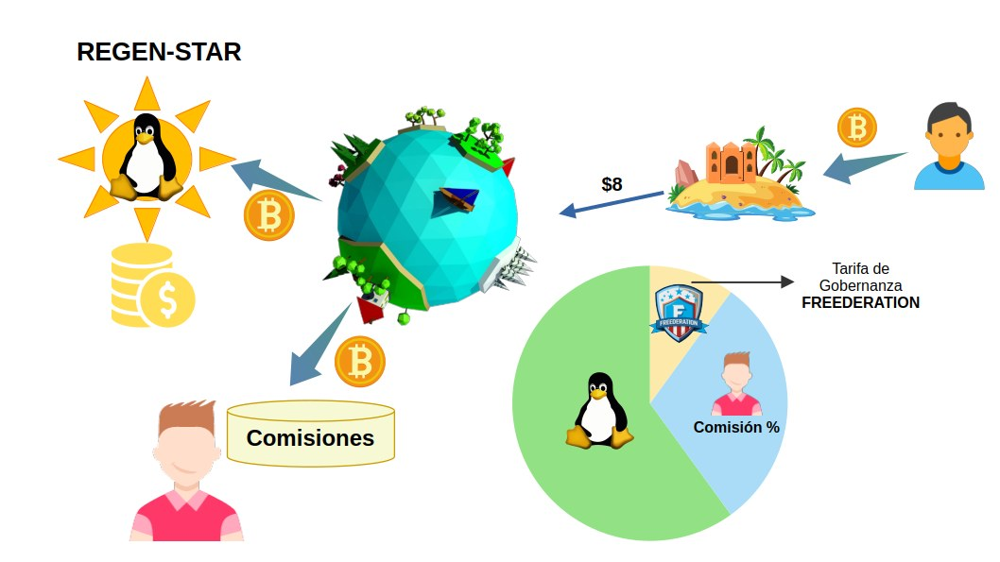
Supervisión y Control de las Meta-Islas
Los Regen-Planets tienen la responsabilidad de supervisar las actividades de las Meta-Islas bajo su jurisdicción. Esta supervisión es esencial para garantizar el cumplimiento de las normativas establecidas por la franquicia Regen-Star. En caso de incumplimiento, los Regen-Planets tienen la autoridad para tomar medidas disciplinarias que incluyen:
- Bloqueo de Operaciones: Suspensión temporal de las actividades de una Meta-Isla.
- Revocación de Membresía: Cancelación unilateral de la membresía del propietario de la Meta-Isla y retiro del token que acredita la titularidad de la Meta-Isla.
Estas medidas aseguran que las operaciones dentro de las Meta-Islas se mantengan dentro de los estándares requeridos, protegiendo la integridad de la franquicia Regen-Star.
Incentivos para la Supervisión
Los Regen-Planets están motivados a ejercer una supervisión diligente sobre las Meta-Islas debido a los beneficios económicos derivados de su correcto funcionamiento. Los Regen-Planets comparten las comisiones de ventas generadas por las Meta-Islas a su cargo, creando una fuente de ingresos constante y significativa. Esta estructura de incentivos asegura que los Regen-Planets se mantengan proactivos en la vigilancia y apoyo de sus Meta-Islas.
Creación y Venta de Meta-Islas
Cuando una Meta-Isla es vendida a un aspirante a miembro de la franquicia, el Regen-Planet recibe una comisión de venta. Y el restante de los ingresos se destina al sostenimiento de la Regen-Star cuya cotización se establece por el Precio-Base, el cuál se obtiene de la curva de precios de emisión de Meta-Islas. Este sistema de comisiones asegura que tanto los Regen-Planets como la Regen-Star obtengan beneficios de cada transacción, promoviendo un modelo de negocio sostenible.
Cálculo del Precio de la Meta-Isla
El precio de una Meta-Isla se determina mediante una fórmula que considera tanto el Precio-Base como la Comisión destinada al Regen-Planet. El Precio-Base se calcula utilizando una fórmula de curva de exponente cúbico, ajustada de acuerdo a la cantidad de Meta-Islas ya emitidas dentro del Regen-Planet. Los parámetros de esta fórmula son establecidos por la Regen-Star, y se definen como sigue:
- FloorPrice: Precio mínimo base.
- IslandCurvePriceRate: Factor de incremento de curva.
- CurveFactor: Definido como el número de islas emitidas dividido por el prestigio del Regen-Planet.
La fórmula para el Precio Base es:
El incremento dinámico del Precio Base está diseñado para limitar la emisión de nuevas Meta-Islas, creando un efecto de escasez controlada que fomenta una competencia saludable entre diferentes Regen-Planets. Este mecanismo asegura que el mercado de Meta-Islas se mantenga equilibrado y atractivo para nuevos inversores.
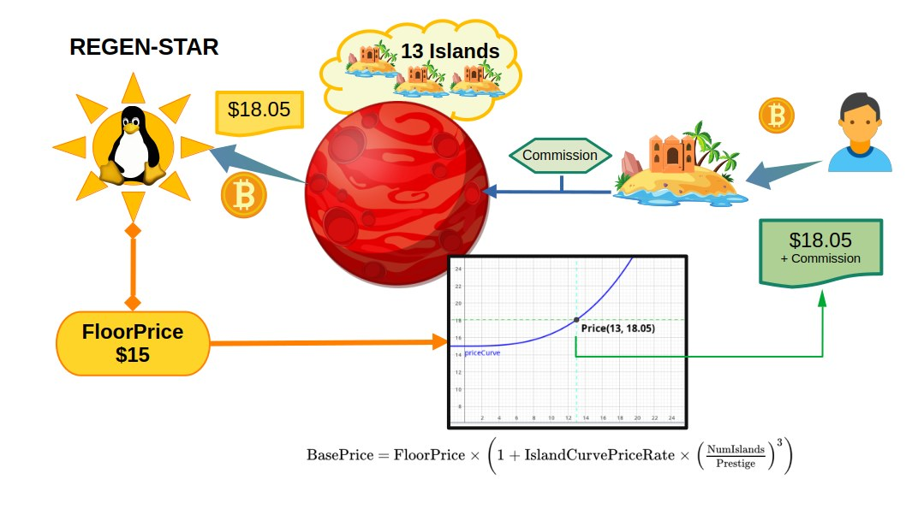
Cabe resultar que el parámetro de Prestigio utilizado por el Regen-Planet creado no es el mismo parámetro global de su Regen-Star. En su lugar, se asigna un valor de Prestigio instanciado que refleja el estado de la Regen-Star en el momento de la creación del Regen-Planet.
El objetivo de tal política es garantizar que, a medida que el proyecto adquiere madurez y demuestra su compromiso con la calidad, se le permita incorporar más agentes asociados. Es decir, que los Regen-Planets acuñados en generaciones futuras adquieran una mayor capacidad de producción de Meta-Islas que sus predecesores. Así se mejora su competitividad incentivando un crecimiento orgánico y sostenido de la franquicia.
Recaudación de Fondos por Actividad Económica
Los Regen-Planets también recaudan fondos provenientes de la actividad económica de las Meta-Islas, especialmente en la monetización de servicios y contenidos patrocinados. Mediante el proceso conocido como SponsorShot, las Meta-Islas pueden atraer patrocinadores (Sponsors) para financiar sus actividades. Los ingresos generados a través de SponsorShot se distribuyen de la siguiente manera:
- Un porcentaje se destina a proyectos de software de código abierto (Open Source), fomentando así el desarrollo y la innovación tecnológica dentro del ecosistema Regen-Star.
- De la comisión de venta obtenida por la Meta-Isla a través del SponsorShot, un porcentaje se distribuye como regalía al Regen-Planet.
Creación de los Regen-Planets
Los Regen-Planets son inicialmente adquiridos por los Early-Adopters, los primeros inversores en el proyecto Regen-Star. Estos inversores obtienen sus Regen-Planets a través de una venta inicial de tokens, coordinada por la Regen-Star en su fase de fundación. La cantidad de tokens emitidos es limitada, lo que garantiza exclusividad y valor a estos activos iniciales.
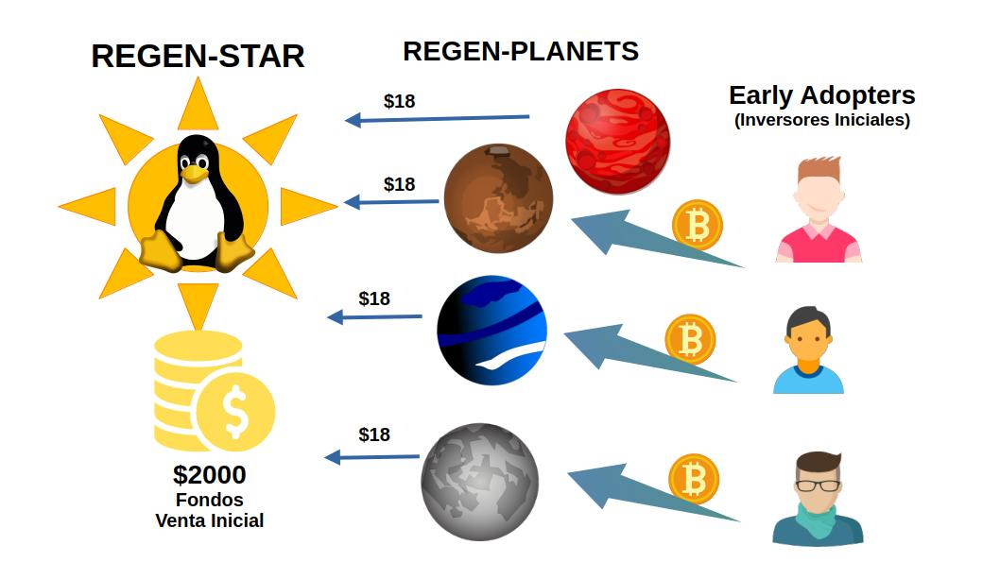
Cuando el fundador de una Regen-Star inscribe su proyecto, también define los parámetros de la venta inicial de Regen-Planets para su venta inicial. Esta información especifica:
| Atributo | Descripción |
|---|---|
| FounderPlanetReserve | Cantidad de Regen-Planets reservadas para el fundador. |
| InitialPlanetMintingCount | Cantidad total de Regen-Planets a ofrecer en la venta incial |
| PlanetMintingPrice | Precio de venta del ofrecimiento inicial de Regen-Planets |
| nonce | Si es diferente de 0, entonces requiere una autorización de firma criptográfica por cada venta de planeta |
Solo cuando la Regen-Star es promovida y acreditada, los Regen-Planets adquiridos en la venta incial ya tendrán la facultad de producir Meta-Islas. Posteriormente, los propietarios de Meta-Islands pueden adquirir un Regen-Planet al completar un rompecabezas de piezas NFT conocidas como Anillos de la Fortuna. Estos Anillos de la Fortuna son Combi-Tokens generados aleatoriamente con combinaciones únicas de color y número de serie.
Cada grupo consta de cinco anillos que los coleccionistas pueden intercambiar utilizando las herramientas de mercado de FREEDERATION. Aquellos que logran completar una secuencia de anillos de la misma serie reciben como recompensa un nuevo Regen-Planet.
Propiedad Compartida y Gobernanza
Los Regen-Planets pueden contar con un grupo de accionistas que tienen derecho a los beneficios generados por la actividad de sus Meta-Islas, así como a participar en la gobernanza para tomar decisiones sobre su administración. Esta modalidad de gestión compartida se habilita mediante la conformación del grupo de los cinco Anillos de la Fortuna de la misma serie.
Los múltiples dueños de los anillos NFT pueden acordar una sociedad compartida del planeta, recibiendo cada uno un porcentaje de los derechos económicos de acuerdo con la cantidad de anillos que aporte al grupo.
En esta sección se describen los mecanismos de recaudo de fondos y su administración para financiar los múltiples procesos de mantenimiento de la infraestructura.
- Recaudo de Fondos en la Regen-Star.
- Manejo Presupuestal de Bienes Públicos.
- SponsorShots: Patrocinio y Catalogación..
- Fondo de Gobernanza de FREEDERATION.
- VestingPeriods y Retención de Comisiones.
Recaudo de Fondos en la Regen-Star
Las Regen-Star recaudan fondos de las siguiente fuentes de ingresos:
-
A. De la venta inicial de Regen-Planets: Inicialmente, cuando se crea una Regen-Star asociada a un proyecto Open Source, ésta realiza una venta inicial de tokens de Regen-Planets que se ofrecen a los primeros inversores del proyecto, los Early-Adopters. De esta venta inicial el proyecto obtiene los recursos para promover la evolución de su proyecto. -
B. De la venta de Meta-Islands: los administradores de los Regen-Planet establecen el precio de los tokens NFT correspondientes a las Meta-Islands. Un ingreso base se destina a la Regen-Star para financiar el desarrollo del proyecto Open Source. El excedente es capturado por el Regen-Planet a modo de comisión de venta. -
C. De los SponsorShots: Los operadores de las Meta-Islands recaudan un pago por el servicio de promoción de publicaciones. Un ingreso base se destina a la Regen-Star para financiar el desarrollo del proyecto Open Source. El excedente es capturado por la Meta-Island y su Regen-Planet a modo de comisión de venta.
Deducción del impuesto de FREEDERATION
De las actividades comerciales A, B y C, se descuenta un porcentaje de impuesto que contribuye al Fondo de Gobernanza de FREEDERATION:
- En el caso de
A(venta inicial de Regen-Planets), la Regen-Star ha de recaudar lo suficiente en impuestos para pagar una Cuota de Acreditación a FREEDERATION. - En
ByC, que corresponden a las actividades comerciales de la Regen-Star, el impuesto corresponde a la Cuota de Promoción que permite el ascenso instantáneo del proyecto al aumentar su Prestigio cada VestingPeriod.
Distribución de Fondos en la Regen-Star
El concepto de negocio basado en el aseguramiento de compromisos y supervisión de los miembros asociados, garantiza ingresos constantes para financiar el mantenimiento y desarrollo del proyecto de Bienes Públicos (incluyendo Open Source) a cargo de la Regen-Star. Los fondos recaudados se reparten en 3 rubros:
- Fondo de Desarrollo: El Rubro destinado al Presupuesto de Bienes Públicos y Open Source. Por defecto, se destina el 60% de los ingresos a éste fondo para financiar tareas de desarrollo y recompensas para incentivar a voluntarios de la comunidad que contribuyan con labores.
- El Fondo de Cobertura de Riesgos: Este fondo garantiza la liquidez para responder a las acusaciones contra el proyecto en temas de moderación de contenido y legitimidad del desarrollo del proyecto de bienes públicos. De éste fondo se pagarán sanciones económicas que van a ser recolectados en los fondos de la Lotería de Promoción para futuros premios.
- Fondo de Comunidad: Un pequeño porcentaje se destina a financiar actividades de la comunidad, eventos sociales y beneficios que son propuestos en la gobernanza de la comunidad de la Regen-Star.
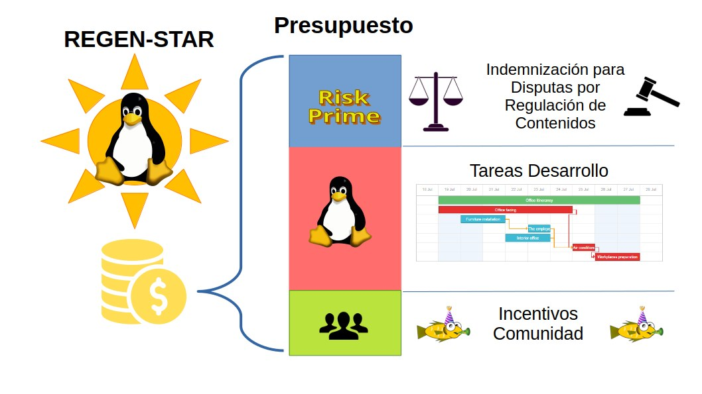
Manejo Presupuestal de Bienes Públicos
En el ecosistema FREEDERATION, la Regen-Star introduce un mecanismo robusto para la gestión de pagos y financiamiento de tareas de desarrollo de proyectos Open Source, empleando los recursos recolectados en el rubro Fondo de Desarrollo.
Este mecanismo se basa en la colaboración y toma de decisiones descentralizada, gestionada a través de una DAO vinculada a la Regen-Star.
Los miembros de la DAO, que son aquellos que poseen tokens de Meta-Isla o Regen-Planet, juegan un papel crucial en la propuesta, aprobación y financiamiento de las tareas.
A continuación, se explica detalladamente el proceso de gestión de pagos asincrónicos y las distintas instancias por las que pasa una propuesta de tarea.
Proceso de Propuesta y Aprobación de Tareas
1. Propuesta Sujeta a Ser Aprobada
Cualquier miembro de la DAO puede proponer una tarea para el desarrollo del proyecto Open Source. Una propuesta de tarea debe incluir:
| Atributo | Descripción |
|---|---|
| TaskMeta | Publicación en Nostr con la descripción de la tarea. |
| Commissioner | El responsable de realizarla. Un perfil verificado de redes sociales. |
| TargetAddress | Dirección de crypto-billetera de recepción del pago por tarea cumplida. |
| Duration | Duración de la ejecución de la tarea. |
| Cost | Costo de la tarea. |
2. Propuesta Aprobada pero No Financiada
Una vez que la propuesta es creada, pasa a una fase de votación. Los miembros de la DAO revisan la propuesta y votan si debe ser financiada utilizando los fondos comunes recolectados por la Regen-Star. Si la mayoría aprueba la propuesta, esta pasa a los tiers de prioridad dentro de la cola de tareas pendientes (backlog).
3. Propuesta Aprobada y Financiada
Cuando la propuesta llega a un nivel de prioridad suficiente, se asignan los fondos necesarios a la tarea aprobada desde el Fondo de Desarrollo que recolecta la Regen-Star. En este punto, se inicia el contador de tiempo para el desarrollo, y la tarea se coloca oficialmente en la cola de desarrollo activa.
4. Propuesta Cancelada Después de Aprobada y Financiada
Si el desarrollo de la tarea no se completa dentro del tiempo estipulado, la tarea se cancela automáticamente. En este caso, los fondos asignados para la tarea se reembolsan al fondo común de la Regen-Star, asegurando que los recursos no se desperdicien en tareas no completadas.
5. Propuesta Finalizada con Éxito
Cuando la tarea se completa con éxito dentro del plazo asignado, los fondos presupuestados para la tarea se desbloquean. Estos fondos pueden ser reclamados por la cuenta destino especificada en la propuesta inicial, como compensación por el trabajo realizado.
Mecanismo de Pagos Asincrónicos
Recolección de Fondos
La Regen-Star recolecta fondos de diversas fuentes para apoyar el desarrollo de los proyectos Open Source bajo su tutela. Tales fuentes consisten en:
- El recaudo por la venta inicial de los Regen-Planets en fase de incubación.
- En la venta Meta-Islas dentro de los Regen-Planets.
- En los ingresos de los patrocinadores recolectados por las Meta-Islas, a través de los SponsorShots.
De los fondos recolectados, un porcentaje corresponde al rubro Fondo de Desarrollo. El destino presupuestal de éste fondo se gestiona a través de la DAO de la Regen-Star donde participan los miembros asociados, los agentes aseguradores.
Estos miembros determinan la aprobación de los presupuestos para ejecutar las tareas de desarrollo del proyecto comunitario de Bienes Públicos y Open Source.
Asignación de Fondos
La asignación de fondos sigue un modelo asincrónico, donde los pagos se realizan solo cuando se cumplen ciertos criterios. Esto incluye la aprobación de la propuesta por parte de la DAO, la disponibilidad de fondos suficientes y el cumplimiento exitoso de la tarea propuesta. Este enfoque minimiza el riesgo y asegura que los recursos se utilicen de manera efectiva.
Gestión de Backlog
El backlog de tareas es una lista dinámica que se actualiza en función de las prioridades definidas por la DAO. Las tareas aprobadas, pero no financiadas, permanecen en el backlog hasta que alcanzan un nivel de prioridad que justifica la asignación de fondos. Este sistema permite una gestión flexible y eficiente de las tareas, asegurando que se financien las iniciativas más importantes y de mayor impacto.
Control de Tiempos y Seguimiento
Una vez que una tarea es financiada, se inicia un estricto control de tiempos y seguimiento. La DAO puede monitorear el progreso de las tareas y tomar decisiones informadas sobre la asignación de recursos adicionales o la cancelación de tareas que no cumplan con los plazos establecidos.
Conclusión
El mecanismo de gestión de pagos y financiamiento de tareas de desarrollo de proyectos Open Source en FREEDERATION, implementado a través de la Regen-Star, representa un enfoque innovador y eficiente para la colaboración descentralizada.
Al permitir que los miembros de la DAO propongan, voten y monitoreen las tareas, y mediante el uso de un sistema de pagos asincrónicos, se asegura una distribución equitativa y efectiva de los recursos, fomentando el desarrollo continuo y exitoso de proyectos Open Source.
SponsorShots: Patrocinio y Catalogación
El proceso del SponsorShot establece el recaudo financiero que las Regen-Star requieren para gestionar el desarrollo y mantenimiento de los proyectos Open Source. Las Meta-Islas asociadas a un Regen-Star ayudan a la distribución de los tokens del SponsorPack (Combi-Tokens y Listing-Tokens), y gestionan el proceso de promoción de contenidos con sus patrocinadores (Sponsors).
Los SponsorShots son la alternativa de los Zaps de Nostr, con el beneficio adicional de que contribuyen a la sostenibilidad de Bienes Públicos y Open Source. De forma similar al fenómeno del Zapvertising en Nostr, los patrocinadores aportarán una contribución económica a las Meta-Islas que ofrecen contenido de calidad y demuestran un interés genuino de su audiencia.
Recaudo y Prevención del Fraude
El aspecto clave es que a partir del recaudo de cada SponsorShot, una parte se destina al Fondo Común de la Regen-Star. Otro porcentaje se destina a Fondo de Gobernanza de FREEDERATION. Y del monto restante se deduce una comisión. Esta comisión se reparte de la siguiente manera:
- Un porcentaje de la comisión se retribuye al Regen-Planet supervisor de la Meta-Isla, según el parámetro de tarifa de recaudo establecido por la gobernanza del Regen-Planet. Usualmente es el 10%.
- El resto de la comisión corresponde al dueño de la Meta-Isla (90%).

Este sistema de reparto de los SponsorShots brinda mecanismos para prevenir el fraude prevalente en el previo sistema de los Zaps en Nostr: se corrige el problema de las auto-donaciones que manipulan los puntajes de relevancia y fomentan esquemas de confabulación entre cuentas.
La filosofía de la prevención del fraude de la auto-promoción consiste en impedir que el atacante recupere los fondos invertidos en Zaps fraudulentos. Por ende, los fondos de promoción recaudados con los SponsorShots deben destinar una contribución al beneficio de un proyecto de Bienes Públicos, el cuál ha sido avalado por la comunidad y autorizado por la DAO de FREEDERATION.
Gracias al mecanismo de los SponsorShots. se garantiza una contribución recurrente al proyecto de Bienes Públicos y Open Source. Al mismo tiempo se constituye como una medida de prevención de fraude.
Reputación de la Meta-Isla y SponsorShots
La contribución de los SponsorShots aumenta el valor social de la actividad de la Meta-Isla. Precisamente, porque respalda el mérito de contribuir con un genuino proyecto que beneficia a la sociedad, y se refleja directamente en su puntaje de Reputación.
Esa relación entre la Reputación de la Meta-Isla, la legitimidad del proyecto de Bienes Públicos liderado por la Regen-Star, y el compromiso con la calidad de contenidos otorgan un valor especial al inversor o patrocinador.
Interacción en los SponsorShots
A cambio de su contribución económica en el SponsorShot, el inversor obtiene un reconocimiento único, el SponsorPack: Un paquete de NFTs que adquiere importancia en futuras actividades comunitarias dentro de las Meta-Islas.

Cabe destacar que a través de la operación del SponsorShot se establece un mecanismo de comunicación privado donde el patrocinador propone publicaciones para ser promovidas y catalogadas por la Meta-Isla.
La Meta-Isla que recibe un SponsorShot, tiene la potestad de elegir si aceptar el encargo del patrocinador o simplemente otorgar el paquete de NFTs (SponsorPack), según la siguiente casuística:
-
A. Si acepta, se gana una comisión del ingreso del SponsorShot.A.1. Prepara una publicación en borrador y la presenta al patrocinador para confirmar el encargo.A.2. El patrocinador firma digitalmente la aceptación del encargo, autorizando el pago de la comisión extra incluída en el SponsorShot para la Meta-Isla.
-
B. Si NO acepta el encargo, la comisión del SponsorShot se destina enteramente al fondo común del Regen-Planet. -
C. Los SponsorShots sin encargo simplemente otorgan un paquete de NFTs (SponsorPack) y entregan una contribución opcional a la Meta-Isla.
En todos los casos (A, B, C) El patrocinador recibe el SponsorPack que consiste en un grupo de NFTs promocionales (Combi-Tokens), mas un número fijo de Listing-Tokens (5 por defecto).
Fondo de Gobernanza de FREEDERATION
La DAO de FREEDERATION recauda impuestos de las actividades comerciales de las Regen-Star, así como tarifas de participación en la Lotería de Promoción y la venta de tokens para la creación de nuevas Regen-Star.
El Fondo de Gobernanza de FREEDERATION se destina a dos rubros principales:
- Rubro de Administración: Fondos necesarios para procesar los contratos inteligentes de FREEDERATION.
- Rubro de Lotería de Promoción: Fondos destinados a recompensar a los participantes en las consultas de votación, las Meta-Islas, y para su participación en los sorteos recurrentes de la Lotería de Promoción en cada VestingPeriod.
Las fuentes de ingresos para el Fondo de Gobernanza provienen de los impuestos deducidos de la actividad comercial en las Regen-Star y de otros cobros ocasionales relacionados con la promoción y resolución de disputas. Estas fuentes son:
- Impuesto de FREEDERATION: Porcentaje descontado de los ingresos por la venta de Meta-Islas en los Regen-Planets y los SponsorShots. En el futuro, también se obtendrá de la venta de pólizas.
- Venta de Nucleus-Token: Ingresos por la venta del token de utilidad fungible Nucleus-Token, necesario para fundar una Regen-Star.
- Tarifa de Absolución: Pago que las Regen-Star en estado
GUILTYdeben realizar para ser elegibles en la Lotería de Promoción y quedar absueltas de cargos. - Ticket de la Lotería de Promoción: Pago que las Meta-Islas deben hacer para participar en el sorteo de la Lotería de Promoción.
- Retribución por Veredictos: Las indemnizaciones pagadas por las Regen-Star en los Tribunales de Arbitraje.
Del Impuesto de FREEDERATION, las Regen-Star deben recaudar una cuota mínima para ser elegibles a su Acreditación o posterior Promoción de Prestigio. La DAO de FREEDERATION establece los siguientes parámetros:
- Cuota de Promoción: Valor mínimo que una Regen-Star acreditada (
ACCREDITED) debe contribuir en impuestos para aumentar su puntaje de Prestigio en el VestingPeriod actual. - Cuota de Acreditación: Valor mínimo que una Regen-Star en estado de incubación (
NEBULOUS) debe contribuir en impuestos para ser elegible a convertirse en una Regen-Star acreditada (ACCREDITED).
VestingPeriods y Retención de Comisiones
El VestingPeriod es un lapso de tiempo predefinido durante el cual se contabilizan las actividades de recaudo de las Regen-Star, y las comisiones generadas por estas actividades se retienen. Por defecto, este periodo es de 7 días. El objetivo principal del VestingPeriod es proporcionar un marco temporal en el que se puedan realizar varias acciones administrativas y de control que son esenciales para el funcionamiento del ecosistema de FREEDERATION.
Actividades Durante el VestingPeriod
-
Recaudo y Retención de Comisiones: Durante el VestingPeriod, todas las comisiones generadas por las actividades de las Regen-Star se contabilizan y retienen. Esto asegura un control adecuado sobre los ingresos y permite una evaluación precisa de los resultados financieros al final de cada periodo.
-
Proceso Global y Sorteo Aleatorio: Al final de cada VestingPeriod, FREEDERATION ejecuta un proceso global que incluye un sorteo aleatorio, la Lotería de Promoción. Este sorteo tiene dos propósitos principales:
- Resolver Disputas: Cualquier disputa pendiente puede ser resuelta de manera imparcial mediante el sorteo en los Tribunales de Arbitraje.
- Promoción de Nuevos Proyectos: Se pueden seleccionar nuevos proyectos para ser acreditados y recibir financiamiento, fomentando la innovación y el crecimiento dentro de la plataforma.
-
Consolidación de Balances y Distribución de Fondos: En el mismo evento global, las Regen-Star pueden consolidar sus balances financieros y distribuir los presupuestos. Los fondos recaudados en el Fondo de Desarrollo se asignan a las tareas y proyectos específicos que necesitan financiamiento, asegurando una gestión eficiente y transparente de los recursos.
-
Auto-Promoción del Prestigio de la Regen-Star: Las Regen-Star acreditadas pueden aumentar su Prestigio pagando una Cuota de Promoción al final del VestingPeriod, lo cual indirectamente aumenta la Reputación de sus Meta-Islas asociadas.
Aumento de Prestigio y Pago de Cuota de Promoción
Al final del VestingPeriod, las **Regen-Star ** tienen la oportunidad de aumentar su Prestigio pagando una Cuota de Promoción al Fondo de Gobernanza de FREEDERATION. Esta cuota corresponde al impuesto sobre los ingresos generados por la Regen-Star a través de la venta de Meta-Islas y SponsorShots.
Para acreditar la cuota de promoción y aumentar su Prestigio, las Regen-Star deben contribuir con un monto mínimo de impuesto al Fondo de Gobernanza de FREEDERATION.
El aumento de Prestigio es un requisito clave para desbloquear los pagos en cada VestingPeriod. Esto asegura que las Regen-Star mantengan un comportamiento alineado con los objetivos y normas de la plataforma, promoviendo un ecosistema robusto y confiable.
Desbloqueo y Retiro de Comisiones
A través del proceso de aumento de Prestigio de cada Regen-Star se otorga a sus agencias asociadas, las Meta-Islas y Regen-Planets, el permiso para desbloquear y retirar las comisiones acumuladas.
Una vez desbloqueados, tales fondos pueden ser transferidos fuera de la DAO de FREEDERATION a las cuentas particulares de los agentes aseguradores que operan estas entidades.
Esto asegura que las Regen-Star y sus agentes asociados mantengan un comportamiento alineado con los objetivos y normas de la plataforma, promoviendo un ecosistema robusto y confiable.
Control Contractual y Cumplimiento
Una característica esencial del VestingPeriod es el control contractual que se impone sobre los agentes aseguradores. Estos agentes no pueden retirar sus comisiones instantáneamente por cada venta. La razón detrás de esta restricción es doble:
- Mantenimiento del Control: Mantener un control efectivo sobre el comportamiento de los agentes aseguradores y asegurar que cumplan con sus compromisos.
- Evaluación de Compromisos: Durante el VestingPeriod, se evalúa el desempeño de los agentes. En caso de incumplimientos o faltas, los agentes pueden ser obligados a entregar las comisiones del VestingPeriod actual y cualquier fondo residual que esté en su agencia (Meta-Isla).
Las comisiones confiscadas debido a incumplimientos se destinan al Fondo de Cobertura de Riesgos para futuras indemnizaciones. De esa manera se provee un respaldo financiero para la Regen-Star, permitiendo que cumpla con sus compromisos sin comprometer su Prestigio y reputación dentro de la plataforma.
Conclusiones
El VestingPeriod es un elemento fundamental en el ecosistema de FREEDERATION, proporcionando un marco estructurado para la gestión financiera, la resolución de disputas y el cumplimiento de compromisos.
Al implementar este periodo de retención y evaluación, junto con el mecanismo de aumento de Prestigio mediante el pago de una Cuota de Promoción, FREEDERATION asegura una operatividad transparente y eficiente. Esto promueve la confianza y la integridad entre todos los participantes del sistema, asegurando el crecimiento sostenible y la estabilidad del ecosistema.
Gobernanza, Moderación y Regulación
FREEDERATION es una organización que promueve la supervisión y el control del desarrollo de proyectos de código abierto (Open Source) dentro de las Regen-Star, así como la gestión responsable de la información por parte de las Meta-Islas.
Mecanismos de Regulación
Para coordinar estas actividades, FREEDERATION utiliza un canal de denuncias conocido como el Tribunal de Arbitraje. Este mecanismo permite a los miembros de la comunidad reportar actos de negligencia o acciones inapropiadas, asegurando un ambiente de desarrollo ético y responsable.
Además, FREEDERATION establece un mecanismo de resolución de disputas y gobernanza descentralizada, cuyo núcleo es la Lotería de Promoción. Este sorteo aleatorio permite a los operadores de las Meta-Islas participar en la toma de decisiones críticas relacionadas con la promoción de nuevos proyectos de código abierto y la resolución de controversias.
Moderación Preventiva en la Gobernanza
Las Meta-Islas están supervisadas por la comunidad a la que se encuentran vinculadas, velando por preservar la reputación colectiva del proyecto. Están sujetas al escrutinio de los Tribunales de Arbitraje organizados por la DAO de FREEDERATION.
Ya sea por el ejercicio de moderación de los Regen-Planets, como por las potenciales denuncias interpuestas por usuarios patrocinadores (sponsors) o por otras Meta-Islas en el ecosistema, las Meta-Islas deben asumir la responsabilidad de su gestión en la promoción de contenido y catalogación temática.
Tribunales de Arbitraje
El Tribunal de Arbitraje actúa como un mecanismo de control y resolución de conflictos dentro de la plataforma FREEDERATION. Facilita un canal de denuncias a través del cual los miembros de la comunidad pueden presentar acusaciones detalladas sobre negligencia en proyectos Open Source en las Regen-Star o acciones inapropiadas por parte de las Meta-Islas.
Mecanismo de Denuncias
Publicación de Denuncias
Los miembros de las comunidades dentro de FREEDERATION tienen la facultad de publicar denuncias detalladas sobre actos de negligencia de los administradores de los proyectos en las Regen-Star, o sobre acciones inapropiadas de moderación por parte de las Meta-Islas.
Estas denuncias se publican como hilos de discusión en la plataforma Nostr, estableciendo así un canal formal para radicar y legitimar las acusaciones en el Banco de Acusaciones del Tribunal de Arbitraje.
Radicación y Legitimación de Denuncias
Una vez publicada una denuncia en Nostr, los operadores de las Meta-Islas o los Sponsors verificados (utilizando su token SponsorAccount) radican la denuncia en el Banco de Acusaciones del Tribunal de Arbitraje. Al hacerlo, obtienen un token numérico que representa la denuncia interpuesta.
Una denuncia contiene los siguientes atributos:
| Atributo | Descripción |
|---|---|
| ACCUSED_ID | El ID de la entidad acusada (Regen-Star o Meta-Isla). |
| CASE_TYPE | Un valor enumerado de los tipos de casos que se gestionan en Nostr. |
| ACCUSATION-POST | El ID de la publicación Nostr JSON con detalles del caso. |
| RETRIBUTION | Retribución económica que se paga como indemnización a la parte afectada. |
| PRESTIGE-DAMAGE | Cantidad de puntos que se descuentan del Prestigio de la Regen-Star. |
| INDEMNIFIED_PARTY | Dirección de wallet donde se pagará a la parte indemnizada. Por defecto 0. |
Durante este proceso, se especifica el tipo de falta según las categorizaciones disponibles, y las sanciones varían dependiendo del tipo de falta y la entidad responsable (Regen-Star o Meta-Isla). A continuación se describen los tipos de denuncias correspondientes al atributo CASE_TYPE , enumerados por identificador:
| Item | Descripción |
|---|---|
| FAKE_PROJECT | La acusación recae sobre la Regen-Star por representar un proyecto o causa que no existe o no representa el valor comunitario anunciado. |
| MISREPRESENTATION | La acusación recae sobre la Regen-Star por suplantación de un proyecto Open Source existente y recaudar fondos sin retribuir a los autores originales. |
| IP_PROJECT_INFRIGEMENT | La acusación recae sobre la Regen-Star por el uso indebido de creaciones intelectuales sin el permiso de los autores. |
| EMBEZZLEMENT | La acusación recae sobre la Regen-Star por malversación de fondos del proyecto Open Source. |
| NFT_PLAGIARISM | La acusación recae sobre la Regen-Star al publicar una colección de NFTs sin licencia de uso o plagio artístico. |
| DEV_NEGLIGENCE | La acusación recae sobre la Regen-Star por mala gestión e incumplimiento en las tareas de desarrollo. |
| PROJECT_SECURITY_HAZZARD | La acusación recae sobre la Regen-Star por propagar software defectuoso que acarrea riesgos de ciberseguridad. |
| HARMFUL_PROJECT | La acusación recae sobre la Regen-Star por propagar contenido digital dañino para la comunidad. |
| BAD_COMMUNITY_MANAGEMENT | La acusación recae sobre la Regen-Star por mala gestión de comunidades o falta de moderación. |
| BAD_GOVERANNCE | La acusación recae sobre la Regen-Star por corrupción en su gobernanza o toma de poder sin equilibrio participativo. |
| HARMFUL_ISLAND | Acusación recae sobre la Meta-Isla por propagar contenido dañino o spam. |
| MISGUIDED_CURATION | Acusación recae sobre la Meta-Isla por asignar mal las categorizaciones de búsqueda. |
| IP_ISLAND_INFRIGEMENT | Acusación recae sobre la Meta-Isla por el uso indebido de creaciones intelectuales sin el permiso de los autores. |
| SPONSORSHIP_FRAUD | Acusación recae sobre la Meta-Isla por promover contenido fraudulento de sponsors. |
| ISLAND_COMPLIANCE_FAILURE | Acusación recae sobre la Meta-Isla por fallar a sus compromisos (Inactivo, usado en el futuro). |
Sanciones y Penalizaciones
Sanciones para las Meta-Islas
-
Confiscación y Clausura del Token: La sanción para una Meta-Isla incluye la confiscación y clausura de su token, así como la confiscación de sus comisiones no reclamadas durante el VestingPeriod presente.
-
Penalización al Regen-Planet Asociado: Cuando una Meta-Isla es sancionada, también se penaliza al Regen-Planet asociado. Se retira la titularidad de la participación accionaria de sus dueños y su derecho a gestionar el activo. Las comisiones se confiscan y el Regen-Planet pasa a ser administrado tutelarmente por su Regen-Star. Todas las comisiones recaudadas por el Regen-Planet sancionado se destinan al Fondo de Cobertura de Riesgos de la Regen-Star.
-
Sanción Económica: La sanción económica se paga del Fondo de Cobertura de Riesgos de la Regen-Star. Si no se puede pagar la sanción en su totalidad, se considera una falta de toda la organización representada por la Regen-Star, degradando su prestigio y limitando sus derechos y actividad económica. Esto implica cambiar su status a GUILTY.
Sanciones para las Regen-Star
-
Extrema Gravedad: Las sanciones a una Regen-Star son de extrema gravedad, usualmente relacionadas con casos de corrupción en su gobernanza o mala gestión del proyecto Open Source. La penalización afecta a toda la organización de miembros asociados.
-
Limitación de Actividad Económica: Se limita la actividad económica de toda la organización de la Regen-Star y se neutraliza su capacidad de respaldar compromisos.
-
Degradación de Status: La sanción degrada el status de la Regen-Star a GUILTY, resultando en la pérdida de puntaje de prestigio. También implica una sanción económica que debe ser pagada del Fondo de Cobertura de Riesgos de la Regen-Star.
-
Absolución: Para que una Regen-Star pueda ser absuelta en el futuro, debe cancelar el total de la deuda de las sanciones económicas del Fondo de Cobertura de Riesgos y pagar una cuota extraordinaria correspondiente a la Tarifa de Absolución.
Cabe aclarar que una Regen-Star afectada por las faltas de sus Meta-Islas no habría de perder necesariamente su status de Acreditada a Culpable (GUILTY), mientras tenga capacidad de pagar las indemnizaciones del Fondo de Cobertura de Riesgos. Pero en caso de no lograr cumplir su sanción, pasa al status de GUILTY y permanecerá en ese estado hasta que logre ser absuelta en una votación de la Lotería de Promoción. Por otro lado, las acusaciones contra la propia Regen-Star implican una falta institucional grave que puede quitar la legitimidad a todo el proyecto. Además de la sanción económica, pierde su acreditación y su status pasa a GUILTIY instantáneamente.
Absoluciones
Cuando una Regen-Star es degradada al estatus GUILTY, se neutraliza su capacidad de producir Meta-Islas o Regen-Planets. Sus miembros asociados pierden el derecho a participar en certámenes de votación y en la Lotería de Promoción, y tampoco pueden operar actividades comerciales en nombre de la organización.
Además, se descuenta un grado de Prestigio por cada VestingPeriod que transcurra desde su sanción. Durante este estado, las Regen-Planets pueden solicitar un juicio de absolución en la Lotería de Promoción, pagando la correspondiente Tarifa de Abolución cada VestingPeriod para participar como Regen-Star elegible. Cabe destacar que es un requisito cancelar la totalidad de las indemnizaciones adeudadas para poder acceder a este beneficio.
Si la Regen-Star obtiene la absolución, reinicia su evolución con el estatus de "redimida" (REDEEMED) y pierde todo derecho a respaldar a otras Regen-Star en estado de incubación, lo que significa que su SponsorshipBonus se fija en 0.
Lotería de Promoción
FREEDERATION introduce un innovador mecanismo para resolver disputas y promover nuevos proyectos Open Source dentro del ecosistema de franquicias Regen-Star. Este mecanismo se basa en una Lotería de Promoción, un sistema de votación y sorteo aleatorio que tiene como objetivo incentivar la participación activa de los miembros de la comunidad y apoyar el desarrollo de proyectos de alto impacto.
La Lotería de Promoción: El Corazón del Mecanismo
En el núcleo del sistema de FREEDERATION se encuentra la Lotería de Promoción, un sorteo aleatorio diseñado para impulsar la participación y promoción de proyectos. Este proceso se desarrolla de la siguiente manera:
- Propuestas Selladas: Los operadores de las Meta-Islas envían sus propuestas selladas Sealed-Proposal a un Banco de Veredictos. Estas propuestas contienen veredictos sobre casos abiertos en el Tribunal de Arbitraje, así como recomendaciones para la promoción de proyectos Regen-Star en incubación y la absolución de aquellos que hayan sido sancionados (GUILTY). Una propuesta sellada Sealed-Proposal corresponde al Hash Keccak-256 de un bloque de atributos, 5 enteros consecutivos de 32 byes, que contiene la siguiente información:
| Proposal Entry | |
|---|---|
| ARBITRATION_TRIAL | ID del Caso de denuncia sobre el cuál se determina un veredicto. Si no se especifica alguno, se asigna "0". |
| VEREDICT | Un valor entero de 32 bytes que indica el veredicto sobre el caso de denuncia (ARBITRATION_TRIAL). Se usa un múltiplo de 7 para indicar una respuesta afirmativa y declarar el veredicto como Culpable; en caso contrario, se interpreta como negativa y se declara la Inocencia. |
| STAR_PROMOTION | ID de la Regen-Star en estado de incubación pero que busca promoción. Si no se especifica alguno, se asigna "0". |
| STAR_REDEMPTION | ID de la Regen-Star GUILTY que puede ser perdonada. Si no se especifica alguno, se asigna "0". |
Esta propuesta sellada corresponde al hash Keccak-256 firmado criptográficamente con la tupla de claves Pública/Privada bajo el esquema Edwards ECDA 256619 del grupo Risetto. Se obtiene un bloque de 64 bytes que corresponde a la tupla (R,s) del punto evaluado en la curva Edwards.
- Generación de Número Aleatorio: Cada VestingPeriod, la DAO de FREEDERATION genera un número aleatorio on-chain que es no predecible pero verificable. Este número se utiliza para seleccionar una propuesta sellada al azar del Banco de Veredictos.
En la plataforma de Internet Computer Protocol, la obtención de números aleatorios se realiza utilizando los servicios de On-Chain Randomness a través del ICP management canister.
- Selección del Ganador: El autor de la propuesta sellada elegida al azar es declarado ganador de la Lotería de Promoción. Sin embargo, para reclamar su premio, debe revelar los parámetros originales de la propuesta sellada criptográficamente.
Es decir, debe publicarse la tupla de 5 enteros correspondientes al Proposal Entry. La tupla será evaluada por el contrato inteligente comparando el committment de la firma criptográfica previamente registrada, referenciando la misma llave pública del autor de la propuesta.
Anulación de Jugadas
Si no coinciden la revelación y la firma criptográfica, se anula la jugada y se cancela la entrega del premio:
- Una inconsistencia en firma criptográfica implica también una sanción en reputación a la Meta-Isla responsable, reduciendo su cuenta de de SponsorShots y el bloqueo al sistema de votación.
- Si la jugada es inválida por otras razones (acusación no vigente, propuestas inválidas), se anula la jugada sin sanción alguna.
En ambos casos, el premio de la Lotería de Promoción se acumula para el siguiente VestingPeriod.
Participación y Beneficios
Para participar en la Lotería de Promoción, los operadores de Meta-Islas deben adquirir un ticket pagando una tarifa. Este sistema está restringido a un ticket por Meta-Isla por cada VestingPeriod, asegurando una distribución justa de oportunidades. Las tarifas recaudadas contribuyen al Fondo de Gobernanza de FREEDERATION, que se utiliza para financiar las operaciones de la plataforma y los premios de la lotería.
Contribuciones y Distribución del Fondo de Gobernanza
El Fondo de Gobernanza se alimenta de dos fuentes principales:
- Tarifas de Participación: Los tickets comprados por los operadores de Meta-Islas.
- Indemnizaciones: Pagadas por las Regen-Star en los Tribunales de Arbitraje.
Un porcentaje del Fondo de Gobernanza se destina al premio de la Lotería de Promoción, incentivando así la participación activa de los operadores de Meta-Islas y fomentando la resolución de disputas y la promoción de proyectos.
Validez de los Veredictos
Para que un veredicto emitido en una propuesta sellada sea aplicable, debe cumplir con ciertos criterios:
- Regen-Star Existentes: La acusación debe dirigirse a Regen-Stars acreditadas (ACCREDITED, REDEEMED) y que no se encuentren en estado de incubación (NEBULOUS, PROMOTING) o previamente sancionadas como GUILTY.
- Entidad Perjudicada: Si los miembros de una Regen-Star ya han eliminado la Meta-Isla perjudicada, se invalida el voto relacionado, ya que no existe entidad a la cual acusar.
- Aboluciones y Promociones: La solicitud de absolución debe referirse a una Regen-Star en estado GUILTY que haya pagado la Tarifa de Abolución. De igual manera, el proyecto en proceso de acreditación debe mantener su estatus PROMOTING.
Aspectos a Mejorar: Votación y Privacidad
En el futuro, se debería considerar la realización de certámenes derivados de los casos seleccionados de la Lotería de Promoción para obtener la votación participativa de más jurados (Meta-Islas) y determinar veredictos sobre la absolución de una Regen-Star o la adjudicación de cargos en una denuncia.
En esta fase preliminar, el sistema propuesto no puede hacer frente a los abusos de las denuncias y puede fomentar ataques contra los proyectos Regen-Star, donde los malos actores bombardean con acusaciones falsas con tal de extraer recompensas de la Lotería de Promoción.
Para futuros desarrollos, se debe plantear una solución que reduzca el riesgo de corrupción y colusión entre los votantes. Esta solución debería capturar las deliberaciones sobre los casos de negligencia de las organizaciones Regen-Star, dedicadas a mantener el Open Source y a promover nuevos proyectos.
La futura solución deberá preservar la privacidad de los votantes, de manera que no se puedan correlacionar sus deliberaciones contabilizadas on-chain en el contrato inteligente. Para ello, se requerirán tecnologías de criptografía homomórfica y privacidad avanzada con Pruebas de Conocimiento Cero (Zero-Knowledge Proofs):
- Este sistema debe garantizar el anonimato de los votantes y sus votos durante el proceso electoral. Su objetivo es mantener la privacidad del voto al permitir la agregación y recuento de votos de forma segura.
- El criptosistema Paillier se elige por su capacidad de realizar sumas y multiplicaciones en datos encriptados sin revelar el texto plano original, permitiendo la agregación segura de votos.
- El mecanismo principal habrá de codificar los votos en un único número entero, donde cada bit representa un voto para una elección específica. Esto facilita las operaciones aritméticas y la posterior Encriptación Homomórfica Parcial basada en el esquema de Paillier.
- El nuevo protocolo establece el rol de un Organizador, responsable de generar un par de claves pública/privada y de distribuir la clave pública a todos los votantes y agregadores. Solo el Organizador puede ver los resultados finales después de desencriptar los votos agregados.
- También se incluye el rol del Agregador, que recoge y valida los votos usando pruebas de conocimiento cero (ZKP) para verificar su validez sin revelar los contenidos exactos. Los votos agregados son luego enviados al Organizador para desencriptarlos y obtener los resultados finales.
La futura solución podría inspirarse en la implementación de Galin Dinkov, que consiste en un sistema de votación que preserva la privacidad utilizando Encriptación Homomórfica Parcial. Entre sus recomendaciones para futuros desarrollos, Dinkov sugiere abordar los riesgos de privacidad en la comunicación con los Agregadores, proponiendo el uso de una Red de Onion para ocultar las direcciones IP de los votantes.
Este sistema puede aplicarse no solo a votaciones, sino también a encuestas y otros tipos de recopilación de datos descentralizados. Esto será crucial para construir una infraestructura de verificación de hechos que apoye a los protocolos de aseguramiento de compromisos en la blockchain.
Tokens de Participación Comunitaria
FREEDERATION revolucionará el mundo del código abierto al establecer una plataforma innovadora para la distribución de NFTs con utilidad concreta para las comunidades Open Source.
En el corazón de esta plataforma se encuentra el mecanismo de SponsorShot, una ingeniosa herramienta mediante la cual las Meta-Islas asociadas a una Regen-Star acuñan y dispensan NFTs de manera aleatoria a los coleccionistas.
Durante el proceso de SponsorShot, se recaudan fondos y se produce un conjunto denominado SponsorPack, el cual consiste en un paquete compuesto por 5 Listing-Tokens y un grupo aleatorio de Combi-Tokens.
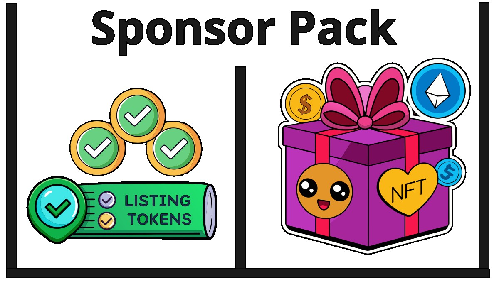
Este mecanismo no solo proporciona emocionantes oportunidades para los entusiastas de los NFTs, sino que también permite a los patrocinadores obtener los Listing-Tokens: útiles para destacar sus publicaciones y posicionan su contenido en la red social Nostr. Además, FREEDERATION abre un nuevo horizonte de posibilidades para los coleccionistas, quienes tienen la oportunidad de intercambiar piezas únicas, enriqueciendo así su experiencia y colección personal.
Esta plataforma no solo se enfoca en la distribución de NFTs, sino que también gamifica la experiencia del usuario, generando incentivos que fomentan la participación y el sentido de comunidad entre los miembros. Con FREEDERATION, el mundo del código abierto y los coleccionistas de NFTs encuentran un punto de convergencia, donde la tecnología de vanguardia y la colaboración comunitaria se unen para crear un ecosistema dinámico y vibrante.
Listing-Tokens y SponsorAccounts
Los Listing-Tokens son tokens semi-fungibles que los Sponsors adquieren a través del proceso de SponsorShot. Estos tokens permiten a cada patrocinador inscribir su cuenta de Nostr en la lista de suscriptores destacados en las Meta-Islas, garantizándoles aparecer en los primeros lugares de búsqueda de trending topics.
Cada Meta-Isla mantiene una lista de suscripción de seguidores, quienes pueden influir en las búsquedas sugeridas a los clientes que consulten esa Meta-Isla según su criterio temático.
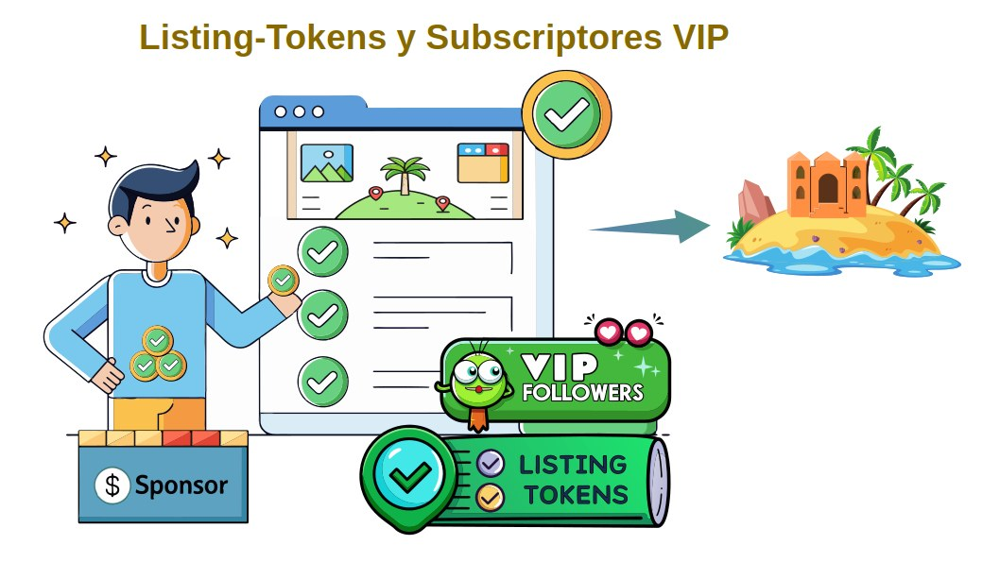
Los Sponsors pueden ocupar un lugar privilegiado en la lista de seguidores utilizando los Listing-Tokens para registrarse como Suscriptores VIP:
- Adquisición de Listing-Tokens: Un Sponsor obtiene un paquete de Listing-Tokens mediante el proceso de SponsorShot (una cantidad fija, por defecto 5 tokens). Estos tokens semi-fungibles están ligados al proyecto Regen-Star, al cual pertenece la Meta-Isla.
- Registro como Suscriptor VIP: El Sponsor gasta cada token para registrarse en la lista de suscriptores importantes de las Meta-Islas de su elección.
- Mejora de Visibilidad: Los internautas que interactúen con el cliente Nostr de FREEDERATION recibirán en su feed las publicaciones sugeridas provenientes de los Suscriptores VIP de las Meta-Islas de su elección, aumentando la visibilidad de los Sponsors.
Cabe resaltar que para registrarse como Suscriptores VIP en las Meta-Islas, los usuarios patrocinadores necesitan activar su cuenta de Sponsor en FREEDERATION por primera vez.
Gastando un monto equivalente a 3 Listing-Tokens, un usuario obtendrá a cambio un NFT de SponsorAccount asociado a su cuenta de Nostr.
Los beneficios de obtener un SponsorAccount incluyen mejorar la visibilidad en sus publicaciones y resaltar su participación en las discusiones, con funcionalidades añadidas para motores de búsqueda y recomendación por temáticas.
Combi-Tokens y Sustain-Collections
FREEDERATION: Innovación en NFTs y Reconocimiento Comunitario
En FREEDERATION, los NFTs adquieren un nuevo significado que se desvía del paradigma tradicional de la "Escasez Digital" como mecanismo para otorgar valor. Los Combi-Tokens emergen como una clase especial de activo digital, concebido para reconocer y dignificar las contribuciones de individuos a las comunidades que apoyan proyectos de Open Source, representados como una Regen-Star.
Solución a Problemas Comunes en la Industria de NFTs
La integración de herramientas de participación comunitaria en el ecosistema de FREEDERATION permite superar varios problemas que han afectado al ámbito de los NFTs, tales como el fraude, la falta de utilidad, promesas incumplidas, lanzamientos fallidos, plagio de obras artísticas, falta de liquidez y una baja demanda en el mercado.
Mecanismo de Acuñación y SponsorShot
El acuñamiento de NFTs en FREEDERATION está intrínsecamente ligado a la actividad de apoyo económico a las Regen-Star, que gestionan comunidades Open Source. A través de las Meta-Islas, los usuarios adquieren los Combi-Tokens mediante el proceso denominado SponsorShot.
Estas Meta-Islas actúan como agentes comerciales en representación de su Regen-Star, recaudando fondos y produciendo un SponsorPack en reconocimiento a los patrocinadores.
El SponsorPack consiste en un paquete de 5 Listing-Tokens y un conjunto de Combi-Tokens generados aleatoriamente. Cada Combi-Token está vinculado a una colección licenciada y registrada dentro de una Regen-Star, conocidas en FREEDERATION como Sustain-Collections.
Apoyo a Artistas y Autenticidad de Obras
Los artistas se asocian con una Regen-Star para respaldar el licenciamiento de sus obras y obtener las regalías correspondientes por su comercialización a través de las Sustain-Collections. Las comunidades en FREEDERATION pueden certificar la autenticidad de los Combi-Tokens y otorgarles reconocimiento en interacciones y eventos gestionados mediante la red social Nostr.
Adicionalmente, se han establecido mecanismos de regulación y deliberación a través de los Tribunales de Arbitraje. Estos tribunales intervienen en caso de que las obras digitales acuñadas por los Combi-Tokens no cumplan con las normas comunitarias o infrinjan derechos de autor.
Utilidad y Mercado Dinámico de los Combi-Tokens
El respaldo comunitario que incorporan los Combi-Tokens asegura su utilidad dentro de la plataforma FREEDERATION. Una característica destacable es la distribución aleatoria de los Combi-Tokens en las colecciones (Sustain-Collections), incentivando la cooperación entre coleccionistas y garantizando un mercado dinámico para estos activos. Esta mecánica se basa en la creación de grupos finitos de la misma serie, conocidos como CombiSets, que los coleccionistas deben completar.
NFTs con Impacto Social
En conclusión, FREEDERATION redefine el concepto de NFTs, transformándolos en herramientas de valor y utilidad para las comunidades. Al vincular el acuñamiento de NFTs al apoyo económico a proyectos de impacto social, se crea un ecosistema sostenible y transparente donde la autenticidad, la participación comunitaria y la utilidad garantizada son pilares fundamentales.
Licenciamiento de las Sustain-Collection
Bajo el amparo de las Regen-Star, los artistas registran y licencian un proyecto de NFTs usando el formato de una Sustain-Collection.
- A través del proceso de interacción conocido como SponsorShot, cada Meta-Isla puede emitir varios Combi-Tokens generados aleatoriamente a partir de los parámetros definidos en las Sustain-Collection previamente registradas dentro de la Regen-Star, al cuál la Meta-Isla está asociada.
- Cada Sustain-Collection define un conjunto limitado de piezas agrupado para una combinación finita CombiSet, y un número de Serie.
- Los coleccionistas tendrán incentivos para completar los CombiSet, reuniendo los Combi-Tokens que corresponden a la combinación finita y la misma Serie.
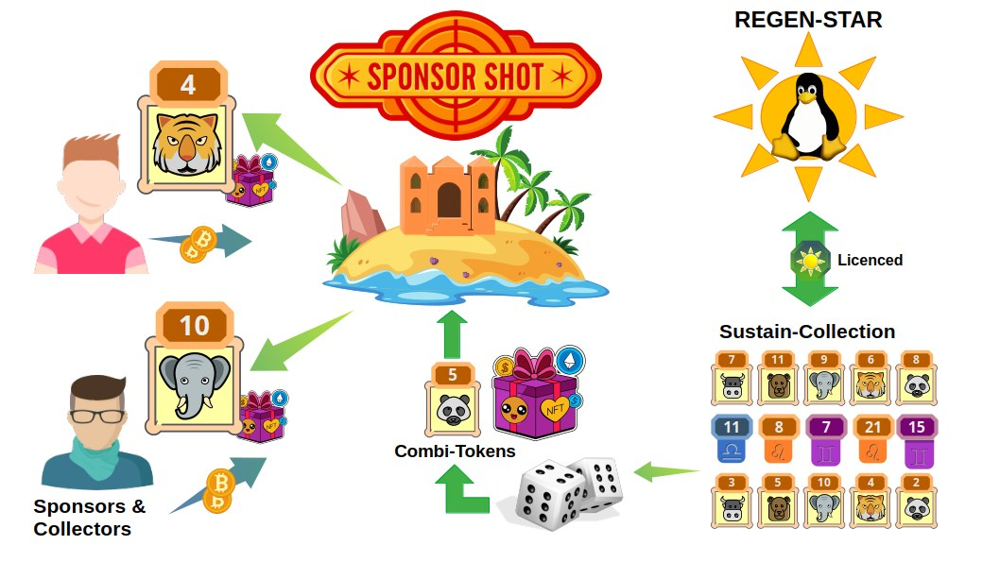
Un ejemplo de cómo se configuran los parámetros de una Sustain-Collection, es una colección de 5 piezas de diseños de diferentes pero bajo la misma temática, y según los parámetros de la Sustain-Collection se han de emitir hasta 20 números de Serie para cada combinación.
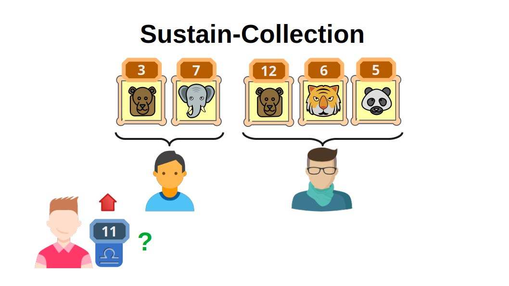
Es decir, los artistas determinan el conjunto de piezas que completan un CombiSet, y por cada tipo de pieza del grupo le corresponden 20 números de serie.
Cuando los usuarios adquieren los Combi-Tokens a través del proceso SponsorShot, se les generan de manera aleatoria un grupo de piezas del conjunto total de combinaciones posibles entre serie y pieza del grupo CombiSet.
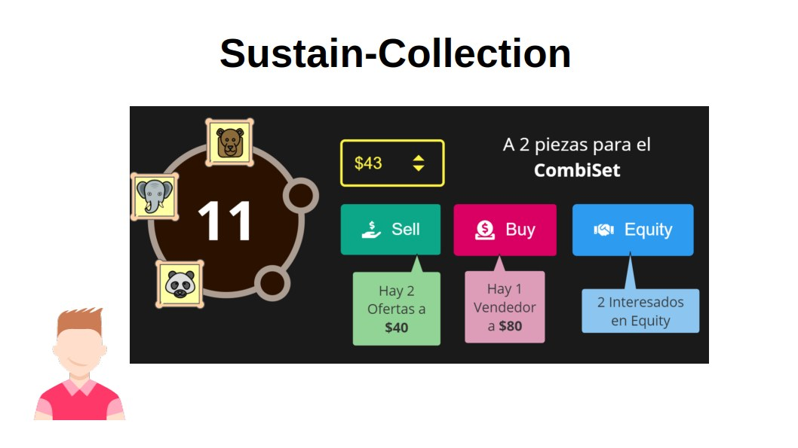
Tal distribución aleatoria de piezas entre coleccionistas brinda incentivos para intercambiar los tokens con otros usuarios en la plataforma. FREEDERATION brinda herramientas para facilitar la coordinación entre vendedores y compradores de piezas, con la posibilidad de establecer acuerdos de asociación para gestión compartida de los premios correspondientes a CombiSets completados.
La meta es completar las piezas de un CombiSet correspondiente al mismo número de serie, para obtener un galardón especial, el Sustain-Badge que otorga al portador ciertos derechos especiales dentro del Regen-Star, a convenir por la comunidad.
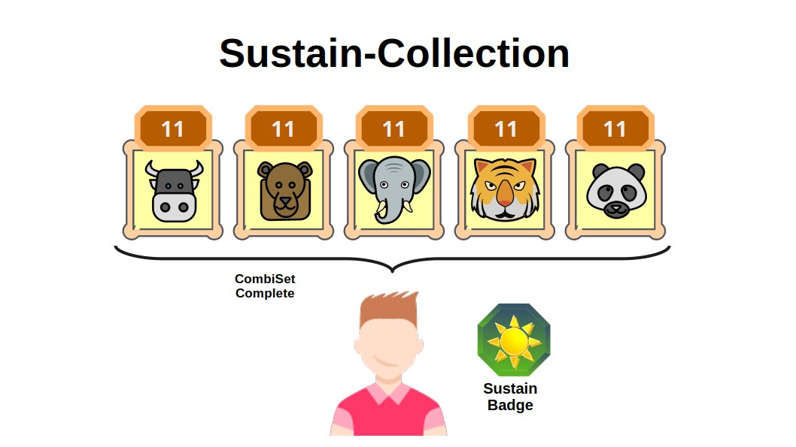
Recompensas por Sustain-Badge
Al planificar el lanzamiento de las Sustain-Collections, los organizadores de la ++Regen-Star** determinan qué beneficios exclusivos y derechos han de otorgarse a quienes completen sus correspondientes CombiSets y consigan el galardón del Sustain-Badge.
Las Regen-Star tienen la facultad de innovar con el tipo de recompensas que han de prometer a los coleccionistas, según el estudio del mercado y las tendencias de interés para la comunidad. Pueden variar desde premios monetarios, acceso a eventos exclusivos o utilidades dentro de la red social.
Algunas sugerencias para los Perks a redimir con cada Sustain-Badge pueden ser:
- Publicaciones Destactadas: otorgan al portador de un Sustain-Badge el derecho a publicar noticias e información que se destaquen para el resto de los usuarios. Esta funcionalidad puede beneficiarle en el negocio del marketing digital.
- Elegir Propuestas de actividades comunitarias a ser financiadas: Las Regen-Star destinan una porción de los fondos recaudados al programa de incentivos para la comunidad. Los delegados que ostentan un determinado Sustain-Badge pueden avalar tales propuestas que podrían ser eventos comunitarios, promociones, y actividades lúdicas.
Al respecto de usar el Sustain-Badge para aprobar propuestas de actividades comunitarias, se puede extender un modelo generalizado de gobernanza donde los representantes se determinan por actividades de negociación entre usuarios a través del intercambio de piezas Combi-Tokens.
Gobernanza basada en CombiSets
La dinámica de completar CombiSets puede ser considerada en una forma eficiente de lograr consensos en una comunidad. Tiene el potencial de convertirse en una alternativa robusta frente a otros sistemas de participación vulnerables a la concentración de poder.
Los mecanismos de votación por tokens son considerados problemáticos en aplicaciones descentralizadas. Según Vitalik Buterin, la participación por votación en DAOs tiende a la corrupción en la medida en la que agentes inescrupulosos logran acumular la mayoría de los tokens, aún si existe un coste económico por cada uno.
- En las DAOs existentes sucede que los mayores tenedores de tokens influyen arbitrariamente en las decisiones de la organización, y pueden canalizar los fondos ventajosamente para si mismos en perjuicio de la comunidad.
- Por otro lado, el mecanismo de Voto Cuadrático propuesto por Vitalik Buterin, lejos de solucionar el problema, incurre en mayores complejidades al estar expuesto a los ataques de colusión y suplantanción de identidad mediante Sybils. Exige mecanismos muy sofisticados de validación de identidad que no expongan la información personal de los participantes. No obstante es ineficaz frente a las estrategias de coordinación social.
En contraste, el sistema de CombiSets le permite a los participantes establecer acuerdos al intercambiar piezas, de manera que se consigue delegar el poder de voto a quien represente los intereses de quienes aceptan en común acuerdo cederle las piezas necesarias para completar el CombiSet y obtener el Sustain-Badge correspondiente.
Bajo esta dinámica, se desmantelan estrategias basadas en explotar el poder económico para acumular tokens y concentrar el poder de decisión en una organización. La distribución aleatoria consigue que cualquiera tenga chance de tener poder de negociación y ceder su pieza a quien le ofrezca el mejor trato.
Por tal razón, aquellos que consigan reunir las piezas para completar un CombiSet y adquirir el Sustain-Badge, pueden ser considerados dignos representantes de su comunidad. El mérito de obtener tal galardón los acredita a influir en las decisiones que determinan cómo la comunidad ha de administrar sus recursos y liderar su desarrollo.
Los Anillos de la Fortuna: Innovación en NFTs Combinables para la Expansión de las Regen-Star
Los Anillos de la Fortuna (Fortuna-Rings) son una adaptación de los Combi-Tokens, diseñados específicamente para facilitar el proceso de acuñación de nuevos Regen-Planets dentro del ecosistema de las Regen-Star. Estos tokens se ofrecen a los inversores asociados como una recompensa por su participación y gestión en el proyecto Open Source.
Características de los Anillos de la Fortuna
- Generación Aleatoria: Utilizando la tecnología de los Combi-Tokens, cada Anillo de la Fortuna es generado aleatoriamente por la DAO de FREEDERATION, combinando colores y números de serie únicos.
- Conjuntos de Anillos: Los tokens se agrupan en conjuntos de cinco anillos, cada uno de un color distinto.
- Intercambio y Colección: Los operadores de las Meta-Islas pueden intercambiar estos anillos en el mercado de FREEDERATION, buscando completar grupos de cinco anillos de la misma serie pero de colores diferentes.
Proceso de Adquisición y Utilización
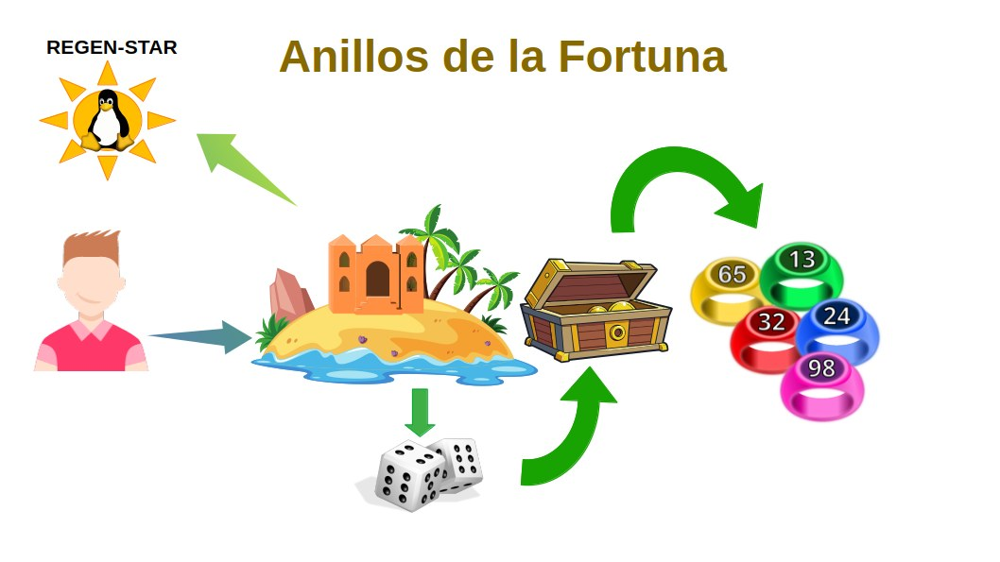
Cuando un operador adquiere una Meta-Isla dentro de un Regen-Planet, recibe un Cofre de Tesoro que contiene cinco Anillos de la Fortuna generados aleatoriamente. Estos anillos pueden ser intercambiados en el mercado de piezas NFTs combinables de FREEDERATION. El objetivo de los coleccionistas es completar secuencias de anillos de la misma serie.
Recompensas y Beneficios
Los coleccionistas que logran completar una secuencia de anillos de la misma serie reciben como recompensa un nuevo Regen-Planet. Este mecanismo no solo incentiva la participación activa en el ecosistema, sino que también promueve la colaboración y el intercambio entre los miembros.
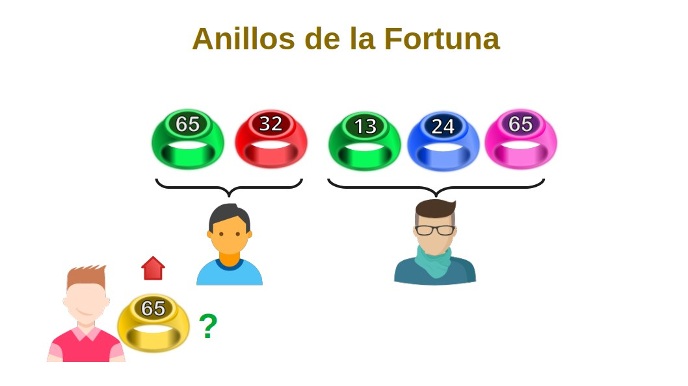
Herramientas y Facilitación por FREEDERATION
FREEDERATION ofrece un conjunto de herramientas para facilitar la coordinación entre compradores y vendedores de piezas:
- Mercado de Intercambio: Los usuarios pueden intercambiar anillos utilizando las herramientas de mercado de FREEDERATION.
- Subastas y Trueques: La plataforma permite subastar precios y establecer trueques para completar colecciones.
- Acuerdos de Asociación: Los operadores pueden establecer acuerdos de gestión compartida de los Regen-Planets mediante acuerdos de Equity.
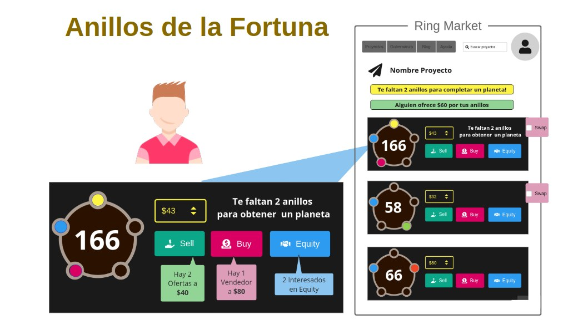
Distribución de Beneficios Equity
La participación en la formación de nuevos Regen-Planets a través de los Anillos de la Fortuna permite a los socios obtener un porcentaje de los derechos sobre los futuros beneficios económicos del Regen-Planet. El porcentaje de estos derechos está directamente relacionado con la cantidad de anillos que cada socio contribuye a la formación del Regen-Planet.
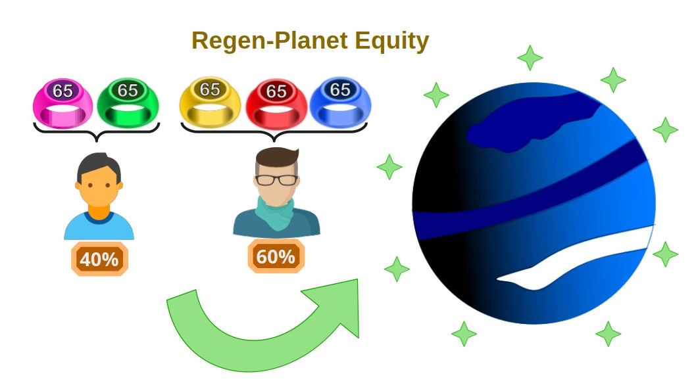
Conclusión
El sistema de Anillos de la Fortuna de la DAO de FREEDERATION representa una innovación significativa en el uso de NFTs combinables. Este modelo no solo facilita la expansión del ecosistema de Meta-Islas y Regen-Planets, sino que también ofrece a los inversores y operadores una oportunidad única de obtener recompensas y beneficios económicos.
A través de la plataforma FREEDERATION, se proporcionan las herramientas necesarias para fomentar la colaboración y el intercambio, asegurando así un crecimiento sostenible y mutuamente beneficioso para todos los participantes del proyecto.
DICCIONARIO DE TOKENS
Anillos de la Fortuna (Fortuna-Rings)
Token no fungible que se genera aleatoriamente del Cofre del Tesoro de la Meta-Isla. Es un tipo de Combi-Token, diseñado específicamente para facilitar el proceso de acuñación de nuevos Regen-Planets dentro del ecosistema de las Regen-Star. Los tokens se agrupan en conjuntos de cinco anillos, cada uno de un color distinto.
CombiSet
Configuración establecida en una Sustain-Collection para conformar un grupo finito de Combi-Tokens de la misma serie. Al adquirir los Combi-Tokens de la misma serie y que completen el grupo finito (CombiSet), el coleccionista podrá fabricar un token exclusivo SustainBadge.
Combi-Token
Token no fungible que se genera aleatoriamente a través del proceso de SponsorShot en las Meta-Islas. Están asociados a una Sustain-Collection definida en la Regen-Star, que establece un patrón de combinaciones de grupo finito y serie. Al adquirir los Combi-Tokens de la misma serie y que completen el grupo finito (CombiSet), el coleccionista podrá fabricar un token exclusivo SustainBadge.
Listing-Token
Token semi-fungible contabilizable, que se otorga por a través de una Meta-Isla mediante el proceso de SponsorShot. Está asociado a las Regen-Star a la cuál pertenece la Meta-Isla responsable de su emisión. Estos tokens permiten a cada Sponsor inscribir su cuenta de Nostr en la lista de suscriptores destacados en las Meta-Islas, lo que les garantiza aparecer en los primeros lugares de búsqueda de trending topics.
Meta-Isla
Token no fungible que representa una agencia de aseguramiento en FREEDERATION, y está asociada a la franquicia de asociados de una Regen-Star. Las Meta-Islas ejercen la labor de Curación de Contenido, se encargan de agregar y catalogar información de calidad apoyados en la garantía que les otorga el Prestigio de la Regen-Star.
Nucleus-Token
Token fungible contabilizable, que se utiliza para crear una nueva Regen-Star en FREEDERATION.
Regen-Planet
Token no fungible que se asocia a la entidad encargada de creación y moderación de las Meta-Islas. Tiene asociados unos tokens de participación Equity que obtienen derechos sobre sus beneficios y gestión.
Regen-Planet-Equity
Token no fungible que representa la participación accionaria sobre un Regen-Planet. Este otorga al portador derechos totales o parciales cuando corresponde a una fracción del Equity. Se obtiene cuando se activa un CombiSet de los Anillos de la Fortuna.
Regen-Star
Token no fungible que se asocia al registro de una organización dedicada al mantenimiento de un proyecto Open Source.
SponsorAccount Token
Token no fungible que se otorga al Sponsor para activar su cuenta de Nostr y destacar sus interacciones en esa red social. A través de éste token puede participar en los juicios del Tribunal de Arbitraje y postular acusaciones. También se destaca como subscriptor destacado en otras cuentas Nostr.
Sustain-Collection
Colección de NFTs exclusivos y licenciados por una Regen-Star, para fomentar la participación comunitaria y brindar beneficios a sus coleccionistas. Cada Sustain-Collection establece una configuración de emisión de tokens, donde se define una agrupación finita de distintos NFTs que combinan un atributo de serie.
Cada Sustain-Collection define un conjunto limitado de piezas agrupado para una combinación finita CombiSet, y un número de Serie.
GLOSARIO
ACCREDITED, Regen-Star Acreditada
Revisar.
Anillos de la Fortuna (Fortuna-Rings)
Revisar.
Combi-Token
Revisar.
CombiSet
Revisar.
Commission, Regen-Planet
Revisar.
Commission, Meta-Island
Revisar.
Cuota de Promoción
Revisar.
Cuota de Acreditación
Revisar.
CurveFactor
Revisar.
DAO
Revisar.
FloorPrice
Revisar.
FREEDERATION Tax, Impuesto de FREEDERATION
Revisar.
Fondo de Desarrollo, Developer Fund
Revisar.
Fondo de Cobertura de Riesgos, Risk Coverage Fund
Revisar.
Fondo de Comunidad, Community Perks Fund
Revisar.
Fortuna-Rings
Revisar.
GUILTY, Regen-Star Culpable
Revisar.
Incubación, Regen-Star
Revisar.
IslandCurvePriceRate
Revisar.
Meta-Isla
Revisar.
Listing-Token
Revisar.
Lotería de Promoción
Revisar.
NFT
Revisar.
Nostr
Revisar.
Nucleus-Token
Revisar.
Prestigio, Prestige
Revisar.
PROMOTING, Regen-Star en fase de Promoción
Revisar.
REDEEMED, Regen-Star Absuelta
Revisar.
Regen-Star
Revisar.
Regen-Planet
Revisar.
Regen-Planet-Equity
Revisar.
Reputación, Meta-Island
Revisar.
Sponsor
Revisar.
SponsorAccount Token
Revisar.
SponsorPack
Revisar.
SponsorShot
Revisar.
Star SponsorShip Bonus
Revisar.
Sustain-Collection
Revisar.
Tarifa de Absolución
Revisar.
Ticket de la Lotería de Promoción
Revisar.
Token
Revisar.
Tribunal de Arbitraje
Revisar.
VestingPeriod
Revisar.